Pandas
一、Pandas是什么¶
pandas 是一个开源的第三方 Python 库，从 Numpy 和 Matplotlib 的基础上构建而来，享有数据分析“三剑客之一”的盛名（NumPy、Matplotlib、Pandas）。Pandas 已经成为 Python 数据分析的必备高级工具，它的目标是成为强大、灵活、可以支持任何编程语言的数据分析工具。
Pandas 这个名字来源于面板数据（Panel Data）与数据分析（data analysis）这两个名词的组合。在经济学中，Panel Data 是一个关于多维数据集的术语。Pandas 最初被应用于金融量化交易领域，现在它的应用领域更加广泛，涵盖了农业、工业、交通等许多行业。 Pandas 最初由 Wes McKinney（韦斯·麦金尼）于 2008 年开发，并于 2009 年实现开源。目前，Pandas 由 PyData 团队进行日常的开发和维护工作。在 2020 年 12 月，PyData 团队公布了最新的 Pandas 1.20 版本 。
- 加载数据
- 整理数据
- 操作数据
- 构建数据模型
- 分析数据
1、Pandas主要特点¶
Pandas 主要包括以下几个特点：
- 它提供了一个简单、高效、带有默认标签（也可以自定义标签）的 DataFrame 对象。
- 能够快速得从不同格式的文件中加载数据（比如 Excel、CSV 、SQL文件），然后将其转换为可处理的对象；
- 能够按数据的行、列标签进行分组，并对分组后的对象执行聚合和转换操作；
- 能够很方便地实现数据归一化操作和缺失值处理；
- 能够很方便地对 DataFrame 的数据列进行增加、修改或者删除的操作；
- 能够处理不同格式的数据集，比如矩阵数据、异构数据表、时间序列等；
- 提供了多种处理数据集的方式，比如构建子集、切片、过滤、分组以及重新排序等。
2、Pandas主要优势¶
与其它语言的数据分析包相比，Pandas 具有以下优势：
- Pandas 的 DataFrame 和 Series 构建了适用于数据分析的存储结构；
- Pandas 简洁的 API 能够让你专注于代码的核心层面；
- Pandas 实现了与其他库的集成，比如 Scipy、scikit-learn 和 Matplotlib；
- Pandas 官方网站（点击访问）提供了完善资料支持，及其良好的社区环境。
3、Pandas内置数据结构¶
我们知道，构建和处理二维、多维数组是一项繁琐的任务。Pandas 为解决这一问题， 在 ndarray 数组（NumPy 中的数组）的基础上构建出了两种不同的数据结构，分别是 Series（一维数据结构）DataFrame（二维数据结构）：
- Series 是带标签的一维数组，这里的标签可以理解为索引，但这个索引并不局限于整数，它也可以是字符类型，比如 a、b、c 等；
- DataFrame 是一种表格型数据结构，它既有行标签，又有列标签。
下面对上述数据结构做简单地的说明：
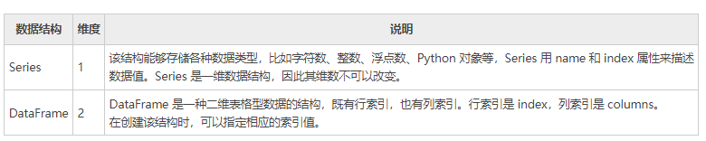
由于上述数据结构的存在，使得处理多维数组数任务变的简单。在《Pandas Series入门教程》和《Pandas DataFrame入门教程（图解）》两节中，我们会对上述数据结构做详细讲解。
二、Pandas库下载和安装¶
Python 官方标准发行版并没有自带 Pandas 库，因此需要另行安装。除了标准发行版外，还有一些第三方机构发布的 Python 免费发行版， 它们在官方版本的基础上开发而来，并有针对性的提前安装了一些 Python 模块，从而满足某些特定领域的需求，比如专门适应于科学计算领域的 Anaconda，它就提前安装了多款适用于科学计算的软件包。
对于第三方发行版而言，它们已经自带 Pandas 库，所以无须另行安装。下面介绍了常用的免费发行版：
1) Anaconda（官网下载：https://www.anaconda.com/）是一个开源的 Python 发行版，包含了 180 多个科学包及其依赖项。除了支持 Windows 系统外，也支持 Linux 和 Mac 系统。
2) Python(x,y)（下载地址：https://python-xy.github.io/）是一款基于 Python、Qt （图形用户界面）和 Spyder （交互式开发环境）开发的软件，主要用于数值计算、数据分析和数据可视化等工程项目，目前只支持 Python 2 版本。
3) WinPython（下载地址：https://sourceforge.net/projects/winpython/files/）一个免费的 Python 发行版，包含了常用的科学计算包与 Spyder IDE，但仅支持 Windows 系统。
下面介绍在不同操作系统环境下，标准发行版安装 Pandas 的方法。
1、Windows系统安装¶
使用 pip 包管理器安装 Pandas，是最简单的一种安装方式。在 CMD 命令提示符界面行执行以下命令：
2、Linux系统安装¶
对于不同的版本的 Linux 系统，您可以采用它们各自的包管理器来安装 Pandas。
1) Ubuntu用户
Pandas 通常需要与其他软件包一起使用，因此可采用以下命令，一次性安装所有包：
2) Fedora用户
对于 Fedora 用户而言，可采用以下命令安装：
3、MacOSX系统安装¶
对于 Mac 用户而言，同样可以直接使用 pip 包管理器来安装，命令如下：
三、Pandas Series入门教程¶
Series 结构，也称 Series 序列，是 Pandas 常用的数据结构之一，它是一种类似于一维数组的结构，由一组数据值（value）和一组标签组成，其中标签与数据值之间是一一对应的关系。
Series 可以保存任何数据类型，比如整数、字符串、浮点数、Python 对象等，它的标签默认为整数，从 0 开始依次递增。Series 的结构图，如下所示：
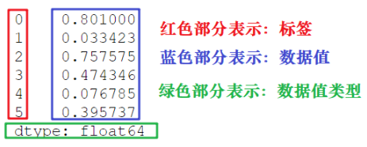
通过标签我们可以更加直观地查看数据所在的索引位置。
1、创建Series对象¶
Pandas 使用 Series() 函数来创建 Series 对象，通过这个对象可以调用相应的方法和属性，从而达到处理数据的目的：
参数说明如下所示：
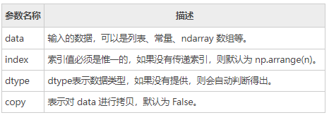
我们也可以使用数组、字典、标量值或者 Python 对象来创建 Series 对象。下面展示了创建 Series 对象的不同方法：
1) 创建一个空Series对象
使用以下方法可以创建一个空的 Series 对象，如下所示：
输出结果如下：
2) ndarray创建Series对象
ndarray 是 NumPy 中的数组类型，当 data 是 ndarry 时，传递的索引必须具有与数组相同的长度。假如没有给 index 参数传参，在默认情况下，索引值将使用是 range(n) 生成，其中 n 代表数组长度，如下所示：
使用默认索引，创建 Series 序列对象：
import pandas as pd
import numpy as np
data = np.array(['a','b','c','d'])
s = pd.Series(data)
print(s)
输出结果如下：
上述示例中没有传递任何索引，所以索引默认从 0 开始分配 ，其索引范围为 0 到len(data)-1，即 0 到 3。这种设置方式被称为“隐式索引”。
除了上述方法外，你也可以使用“显式索引”的方法定义索引标签，示例如下：
import pandas as pd
import numpy as np
data = np.array(['a','b','c','d'])
#自定义索引标签（即显示索引）
s = pd.Series(data,index=[100,101,102,103])
print(s)
输出结果：
3) dict创建Series对象
您可以把 dict 作为输入数据。如果没有传入索引时会按照字典的键来构造索引；反之，当传递了索引时需要将索引标签与字典中的值一一对应。 下面两组示例分别对上述两种情况做了演示。
示例1，没有传递索引时：
import pandas as pd
import numpy as np
data = {'a' : 0., 'b' : 1., 'c' : 2.}
s = pd.Series(data)
print(s)
输出结果：
示例 2， 为index参数传递索引时：
import pandas as pd
import numpy as np
data = {'a' : 0., 'b' : 1., 'c' : 2.}
s = pd.Series(data,index=['b','c','d','a'])
print(s)
输出结果：
当传递的索引值无法找到与其对应的值时，使用 NaN（非数字）填充。
4) 标量创建Series对象
示例如下：
输出如下：
标量值按照 index 的数量进行重复，并与其一一对应。
2、访问Series数据¶
上述讲解了创建 Series 对象的多种方式，那么我们应该如何访问 Series 序列中元素呢？分为两种方式，一种是位置索引访问；另一种是索引标签访问。
1) 位置索引访问
这种访问方式与 ndarray 和 list 相同，使用元素自身的下标进行访问。我们知道数组的索引计数从 0 开始，这表示第一个元素存储在第 0 个索引位置上，以此类推，就可以获得 Series 序列中的每个元素。下面看一组简单的示例：
import pandas as pd
s = pd.Series([1,2,3,4,5],index = ['a','b','c','d','e'])
print(s[0]) #位置下标
print(s['a']) #标签下标
输出结果：
通过切片的方式访问 Series 序列中的数据，示例如下：
输出结果：
如果想要获取最后三个元素，也可以使用下面的方式：
输出结果：
2) 索引标签访问
Series 类似于固定大小的 dict，把 index 中的索引标签当做 key，而把 Series 序列中的元素值当做 value，然后通过 index 索引标签来访问或者修改元素值。 示例1，使用索标签访问单个元素值：
输出结果：
示例 2，使用索引标签访问多个元素值
import pandas as pd
s = pd.Series([6,7,8,9,10],index = ['a','b','c','d','e'])
print(s[['a','c','d']])
输出结果：
示例3，如果使用了 index 中不包含的标签，则会触发异常：
输出结果：
3、Series常用属性¶
下面我们介绍 Series 的常用属性和方法。在下表列出了 Series 对象的常用属性。
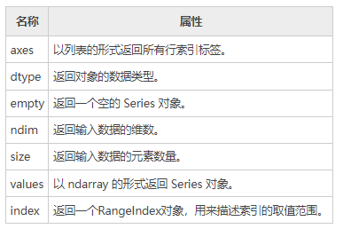
现在创建一个 Series 对象，并演示如何使用上述表格中的属性。如下所示：
输出结果：
上述示例的行索引标签是 [0,1,2,3,4]。
1) axes
import pandas as pd
import numpy as np
s = pd.Series(np.random.randn(5))
print("The axes are:")
print(s.axes)
输出结果
2) dtype
import pandas as pd
import numpy as np
s = pd.Series(np.random.randn(5))
print("The dtype is:")
print(s.dtype)
输出结果：
3) empty
返回一个布尔值，用于判断数据对象是否为空。示例如下：
import pandas as pd
import numpy as np
s = pd.Series(np.random.randn(5))
print("是否为空对象?")
print(s.empty)
输出结果：
4) ndim
查看序列的维数。根据定义，Series 是一维数据结构，因此它始终返回 1。
输出结果：
5) size
返回 Series 对象的大小(长度)。
import pandas as pd
import numpy as np
s = pd.Series(np.random.randn(3))
print(s)
#series的长度大小
print(s.size)
输出结果：
6) values
以数组的形式返回 Series 对象中的数据。
import pandas as pd
import numpy as np
s = pd.Series(np.random.randn(6))
print(s)
print("输出series中数据")
print(s.values)
输出结果：
0 -0.502100
1 0.696194
2 -0.982063
3 0.416430
4 -1.384514
5 0.444303
dtype: float64
输出series中数据
[-0.50210028 0.69619407 -0.98206327 0.41642976 -1.38451433 0.44430257]
7) index
该属性用来查看 Series 中索引的取值范围。示例如下：
#显示索引
import pandas as pd
s=pd.Series([1,2,5,8],index=['a','b','c','d'])
print(s.index)
#隐式索引
s1=pd.Series([1,2,5,8])
print(s1.index)
输出结果：
4、Series常用方法¶
1) head()&tail()查看数据
如果想要查看 Series 的某一部分数据，可以使用 head() 或者 tail() 方法。其中 head() 返回前 n 行数据，默认显示前 5 行数据。示例如下：
import pandas as pd
import numpy as np
s = pd.Series(np.random.randn(5))
print("The original series is:")
print(s)
#返回前三行数据
print(s.head(3))
输出结果：
原系列输出结果:
0 1.249679
1 0.636487
2 -0.987621
3 0.999613
4 1.607751
head(3)输出：
dtype: float64
0 1.249679
1 0.636487
2 -0.987621
dtype: float64
tail() 返回的是后 n 行数据，默认为后 5 行。示例如下：
import pandas as pd
import numpy as np
s = pd.Series(np.random.randn(4))
#原series
print(s)
#输出后两行数据
print(s.tail(2))
输出结果：
原Series输出：
0 0.053340
1 2.165836
2 -0.719175
3 -0.035178
输出后两行数据：
dtype: float64
2 -0.719175
3 -0.035178
dtype: float64
2) isnull()¬null()检测缺失值
isnull() 和 notnull() 用于检测 Series 中的缺失值。所谓缺失值，顾名思义就是值不存在、丢失、缺少。
- isnull()：如果值不存在或者缺失，则返回 True。
- notnull()：如果值不存在或者缺失，则返回 False。
其实不难理解，在实际的数据分析任物中，数据的收集往往要经历一个繁琐的过程。在这个过程中难免会因为一些不可抗力，或者人为因素导致数据丢失的现象。这时，我们可以使用相应的方法对缺失值进行处理，比如均值插值、数据补齐等方法。上述两个方法就是帮助我们检测是否存在缺失值。示例如下：
import pandas as pd
#None代表缺失数据
s=pd.Series([1,2,5,None])
print(pd.isnull(s)) #是空值返回True
print(pd.notnull(s)) #空值返回False
输出结果：
四、Pandas DataFrame入门教程¶
DataFrame 是 Pandas 的重要数据结构之一，也是在使用 Pandas 进行数据分析过程中最常用的结构之一，可以这么说，掌握了 DataFrame 的用法，你就拥有了学习数据分析的基本能力。
1、认识DataFrame结构¶
DataFrame 一个表格型的数据结构，既有行标签（index），又有列标签（columns），它也被称异构数据表，所谓异构，指的是表格中每列的数据类型可以不同，比如可以是字符串、整型或者浮点型等。其结构图示意图，如下所示：
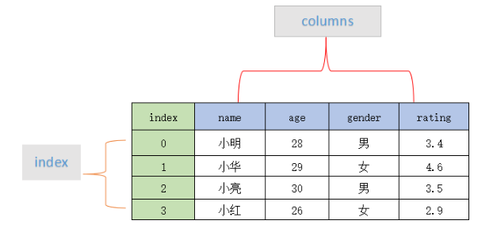
表格中展示了某个销售团队个人信息和绩效评级（rating）的相关数据。数据以行和列形式来表示，其中每一列表示一个属性，而每一行表示一个条目的信息。
下表展示了上述表格中每一列标签所描述数据的数据类型，如下所示：
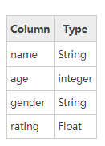
DataFrame 的每一列数据都可以看成一个 Series 结构，只不过，DataFrame 为这些行中每个数据值增加了一个列标签。因此 DataFrame 其实是从 Series 的基础上演变而来。在数据分析任务中 DataFrame 的应用非常广泛，因为它描述数据的更为清晰、直观。
通过示例对 DataFrame 结构做进一步讲解。 下面展示了一张学生成绩表，如下所示：
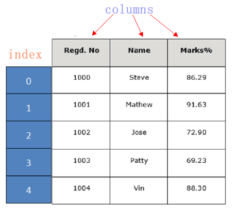
DataFrame 结构类似于 Execl 的表格型，表格中列标签的含义如下所示：
- Regd.No：表示登记的序列号
- Name：学生姓名
- Marks：学生分数
同 Series 一样，DataFrame 自带行标签索引，默认为“隐式索引”即从 0 开始依次递增，行标签与 DataFrame 中的数据项一一对应。上述表格的行标签从 0 到 5，共记录了 5 条数据（图中将行标签省略）。当然你也可以用“显式索引”的方式来设置行标签。
下面对 DataFrame 数据结构的特点做简单地总结，如下所示：
- DataFrame 每一列的标签值允许使用不同的数据类型；
- DataFrame 是表格型的数据结构，具有行和列；
- DataFrame 中的每个数据值都可以被修改。
- DataFrame 结构的行数、列数允许增加或者删除；
- DataFrame 有两个方向的标签轴，分别是行标签和列标签；
- DataFrame 可以对行和列执行算术运算。
2、创建DataFrame对象¶
创建 DataFrame 对象的语法格式如下：
参数说明：
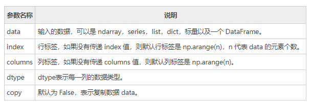
Pandas 提供了多种创建 DataFrame 对象的方式，主要包含以下五种，分别进行介绍。
1) 创建空的DataFrame对象
使用下列方式创建一个空的 DataFrame，这是 DataFrame 最基本的创建方法。
输出结果如下：
2) 列表创建DataFame对象
可以使用单一列表或嵌套列表来创建一个 DataFrame。 示例 1，单一列表创建 DataFrame：
输出如下：
示例 2，使用嵌套列表创建 DataFrame 对象：
import pandas as pd
data = [['Alex',10],['Bob',12],['Clarke',13]]
df = pd.DataFrame(data,columns=['Name','Age'])
print(df)
输出结果：
示例 3，指定数值元素的数据类型为 float：
import pandas as pd
data = [['Alex',10],['Bob',12],['Clarke',13]]
df = pd.DataFrame(data,columns=['Name','Age'],dtype=float)
print(df)
输出结果：
3) 字典嵌套列表创建
data 字典中，键对应的值的元素长度必须相同（也就是列表长度相同）。如果传递了索引，那么索引的长度应该等于数组的长度；如果没有传递索引，那么默认情况下，索引将是 range(n)，其中 n 代表数组长度。 示例 4：
import pandas as pd
data = {'Name':['Tom', 'Jack', 'Steve', 'Ricky'],'Age':[28,34,29,42]}
df = pd.DataFrame(data)
print(df)
输出结果：
注意：这里使用了默认行标签，也就是 range(n)。它生成了 0,1,2,3，并分别对应了列表中的每个元素值。
示例 5，现在给上述示例 4 添加自定义的行标签：
import pandas as pd
data = {'Name':['Tom', 'Jack', 'Steve', 'Ricky'],'Age':[28,34,29,42]}
df = pd.DataFrame(data, index=['rank1','rank2','rank3','rank4'])
print(df)
输出结果如下：
注意：index 参数为每行分配了一个索引。
4) 列表嵌套字典创建DataFrame对象
列表嵌套字典可以作为输入数据传递给 DataFrame 构造函数。默认情况下，字典的键被用作列名。 示例 6 如下
import pandas as pd
data = [{'a': 1, 'b': 2},{'a': 5, 'b': 10, 'c': 20}]
df = pd.DataFrame(data)
print(df)
输出结果：
注意：如果其中某个元素值缺失，也就是字典的 key 无法找到对应的 value，将使用 NaN 代替。
示例 7，给上述示例 6 添加行标签索引：
import pandas as pd
data = [{'a': 1, 'b': 2},{'a': 5, 'b': 10, 'c': 20}]
df = pd.DataFrame(data, index=['first', 'second'])
print(df)
输出结果：
示例 8，如何使用列表嵌套字典以及行、列索引表创建一个 DataFrame 对象。
import pandas as pd
data = [{'a': 1, 'b': 2},{'a': 5, 'b': 10, 'c': 20}]
df1 = pd.DataFrame(data, index=['first', 'second'], columns=['a', 'b'])
df2 = pd.DataFrame(data, index=['first', 'second'], columns=['a', 'b1'])
print(df1)
print(df2)
输出结果：
注意：因为 b1 在字典键中不存在，所以对应值为 NaN。
5) Series创建DataFrame对象
您也可以传递一个字典形式的 Series，从而创建一个 DataFrame 对象，其输出结果的行索引是所有 index 的合集。 示例如下：
import pandas as pd
d = {'one' : pd.Series([1, 2, 3], index=['a', 'b', 'c']),
'two' : pd.Series([1, 2, 3, 4], index=['a', 'b', 'c', 'd'])}
df = pd.DataFrame(d)
print(df)
输出结果如下：
注意：对于 one 列而言，此处虽然显示了行索引 'd'，但由于没有与其对应的值，所以它的值为 NaN。
3、列索引操作DataFrame¶
DataFrame 可以使用列索（columns index）引来完成数据的选取、添加和删除操作。下面依次对这些操作进行介绍。
1) 列索引选取数据列
您可以使用列索引，轻松实现数据选取，示例如下：
import pandas as pd
d = {'one' : pd.Series([1, 2, 3], index=['a', 'b', 'c']),
'two' : pd.Series([1, 2, 3, 4], index=['a', 'b', 'c', 'd'])}
df = pd.DataFrame(d)
print(df['one'])
输出结果：
2) 列索引添加数据列
使用 columns 列索引表标签可以实现添加新的数据列，示例如下：
import pandas as pd
d = {'one' : pd.Series([1, 2, 3], index=['a', 'b', 'c']),
'two' : pd.Series([1, 2, 3, 4], index=['a', 'b', 'c', 'd'])}
df = pd.DataFrame(d)
#使用df['列']=值，插入新的数据列
df['three']=pd.Series([10,20,30],index=['a','b','c'])
print(df)
#将已经存在的数据列做相加运算
df['four']=df['one']+df['three']
print(df)
输出结果：
使用列索引创建新数据列:
one two three
a 1.0 1 10.0
b 2.0 2 20.0
c 3.0 3 30.0
d NaN 4 NaN
已存在的数据列做算术运算：
one two three four
a 1.0 1 10.0 11.0
b 2.0 2 20.0 22.0
c 3.0 3 30.0 33.0
d NaN 4 NaN NaN
上述示例，我们初次使用了 DataFrame 的算术运算，这和 NumPy 非常相似。除了使用df[]=value 的方式外，您还可以使用 insert() 方法插入新的列，示例如下：
import pandas as pd
info=[['Jack',18],['Helen',19],['John',17]]
df=pd.DataFrame(info,columns=['name','age'])
print(df)
#注意是column参数
#数值1代表插入到columns列表的索引位置
df.insert(1,column='score',value=[91,90,75])
print(df)
输出结果：
添加前：
name age
0 Jack 18
1 Helen 19
2 John 17
添加后：
name score age
0 Jack 91 18
1 Helen 90 19
2 John 75 17
3) 列索引删除数据列
通过 del 和 pop() 都能够删除 DataFrame 中的数据列。示例如下：
import pandas as pd
d = {'one' : pd.Series([1, 2, 3], index=['a', 'b', 'c']),
'two' : pd.Series([1, 2, 3, 4], index=['a', 'b', 'c', 'd']),
'three' : pd.Series([10,20,30], index=['a','b','c'])}
df = pd.DataFrame(d)
print("Our dataframe is:")
print(df)
#使用del删除
del df['one']
print(df)
#使用pop方法删除
df.pop('two')
print(df)
输出结果：
原DataFrame:
one three two
a 1.0 10.0 1
b 2.0 20.0 2
c 3.0 30.0 3
d NaN NaN 4
使用del删除 first:
three two
a 10.0 1
b 20.0 2
c 30.0 3
d NaN 4
使用 pop()删除:
three
a 10.0
b 20.0
c 30.0
d NaN
4、行索引操作DataFrame¶
理解了上述的列索引操作后，行索引操作就变的简单。下面看一下，如何使用行索引来选取 DataFrame 中的数据。
1) 标签索引选取
可以将行标签传递给 loc 函数，来选取数据。示例如下：
import pandas as pd
d = {'one' : pd.Series([1, 2, 3], index=['a', 'b', 'c']),
'two' : pd.Series([1, 2, 3, 4], index=['a', 'b', 'c', 'd'])}
df = pd.DataFrame(d)
print(df.loc['b'])
输出结果：
注意：loc 允许接两个参数分别是行和列，参数之间需要使用“逗号”隔开，但该函数只能接收标签索引。
2) 整数索引选取
通过将数据行所在的索引位置传递给 iloc 函数，也可以实现数据行选取。示例如下：
import pandas as pd
d = {'one' : pd.Series([1, 2, 3], index=['a', 'b', 'c']),
'two' : pd.Series([1, 2, 3, 4], index=['a', 'b', 'c', 'd'])}
df = pd.DataFrame(d)
print (df.iloc[2]）
输出结果：
注意：iloc 允许接受两个参数分别是行和列，参数之间使用“逗号” 隔开，但该函数只能接收整数索引。
3) 切片操作多行选取
您也可以使用切片的方式同时选取多行。示例如下：
import pandas as pd
d = {'one' : pd.Series([1, 2, 3], index=['a', 'b', 'c']),
'two' : pd.Series([1, 2, 3, 4], index=['a', 'b', 'c', 'd'])}
df = pd.DataFrame(d)
#左闭右开
print(df[2:4])
输出结果：
4) 添加数据行
使用 append() 函数，可以将新的数据行添加到 DataFrame 中，该函数会在行末追加数据行。示例如下：
import pandas as pd
df = pd.DataFrame([[1, 2], [3, 4]], columns = ['a','b'])
df2 = pd.DataFrame([[5, 6], [7, 8]], columns = ['a','b'])
#在行末追加新数据行
df = df.append(df2)
print(df)
输出结果：
5) 删除数据行
您可以使用行索引标签，从 DataFrame 中删除某一行数据。如果索引标签存在重复，那么它们将被一起删除。示例如下：
import pandas as pd
df = pd.DataFrame([[1, 2], [3, 4]], columns = ['a','b'])
df2 = pd.DataFrame([[5, 6], [7, 8]], columns = ['a','b'])
df = df.append(df2)
print(df)
#注意此处调用了drop()方法
df = df.drop(0)
print(df)
输出结果：
在上述的示例中，默认使用 range(2) 生成了行索引，并通过 drop(0) 同时删除了两行数据。
5、常用属性和方法汇总¶
DataFrame 的属性和方法，与 Series 相差无几，如下所示：
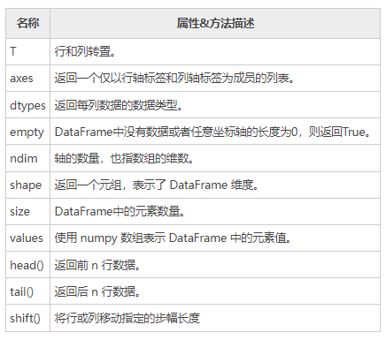
下面对 DataFrame 常用属性进行演示，首先我们创建一个 DataFrame 对象，示例如下：
import pandas as pd
import numpy as np
d = {'Name':pd.Series(['c语言中文网','编程帮',"百度",'360搜索','谷歌','微学苑','Bing搜索']),
'years':pd.Series([5,6,15,28,3,19,23]),
'Rating':pd.Series([4.23,3.24,3.98,2.56,3.20,4.6,3.8])}
#构建DataFrame
df = pd.DataFrame(d)
#输出series
print(df)
输出结果：
输出 series 数据:
Name years Rating
0 c语言中文网 5 4.23
1 编程帮 6 3.24
2 百度 15 3.98
3 360搜索 28 2.56
4 谷歌 3 3.20
5 微学苑 19 4.60
6 Bing搜索 23 3.80
1) T（Transpose）转置
返回 DataFrame 的转置，也就是把行和列进行交换。
import pandas as pd
import numpy as np
d = {'Name':pd.Series(['c语言中文网','编程帮',"百度",'360搜索','谷歌','微学苑','Bing搜索']),
'years':pd.Series([5,6,15,28,3,19,23]),
'Rating':pd.Series([4.23,3.24,3.98,2.56,3.20,4.6,3.8])}
#构建DataFrame
df = pd.DataFrame(d)
#输出DataFrame的转置
print(df.T)
输出结果：
Our data series is:
0 1 2 3 4 5 6
Name c语言中文网 编程帮 百度 360搜索 谷歌 微学苑 Bing搜索
years 5 6 15 28 3 19 23
Rating 4.23 3.24 3.98 2.56 3.2 4.6 3.8
2) axes
返回一个行标签、列标签组成的列表。
import pandas as pd
import numpy as np
d = {'Name':pd.Series(['c语言中文网','编程帮',"百度",'360搜索','谷歌','微学苑','Bing搜索']),
'years':pd.Series([5,6,15,28,3,19,23]),
'Rating':pd.Series([4.23,3.24,3.98,2.56,3.20,4.6,3.8])}
#构建DataFrame
df = pd.DataFrame(d)
#输出行、列标签
print(df.axes)
输出结果：
3) dtypes
返回每一列的数据类型。示例如下：
import pandas as pd
import numpy as np
d = {'Name':pd.Series(['c语言中文网','编程帮',"百度",'360搜索','谷歌','微学苑','Bing搜索']),
'years':pd.Series([5,6,15,28,3,19,23]),
'Rating':pd.Series([4.23,3.24,3.98,2.56,3.20,4.6,3.8])}
#构建DataFrame
df = pd.DataFrame(d)
#输出行、列标签
print(df.dtypes)
输出结果：
4) empty
返回一个布尔值，判断输出的数据对象是否为空，若为 True 表示对象为空。
import pandas as pd
import numpy as np
d = {'Name':pd.Series(['c语言中文网','编程帮',"百度",'360搜索','谷歌','微学苑','Bing搜索']),
'years':pd.Series([5,6,15,28,3,19,23]),
'Rating':pd.Series([4.23,3.24,3.98,2.56,3.20,4.6,3.8])}
#构建DataFrame
df = pd.DataFrame(d)
#判断输入数据是否为空
print(df.empty)
输出结果：
5) ndim
返回数据对象的维数。DataFrame 是一个二维数据结构。
import pandas as pd
import numpy as np
d = {'Name':pd.Series(['c语言中文网','编程帮',"百度",'360搜索','谷歌','微学苑','Bing搜索']),
'years':pd.Series([5,6,15,28,3,19,23]),
'Rating':pd.Series([4.23,3.24,3.98,2.56,3.20,4.6,3.8])}
#构建DataFrame
df = pd.DataFrame(d)
#DataFrame的维度
print(df.ndim)
输出结果：
6) shape
返回一个代表 DataFrame 维度的元组。返回值元组 (a,b)，其中 a 表示行数，b 表示列数。
import pandas as pd
import numpy as np
d = {'Name':pd.Series(['c语言中文网','编程帮',"百度",'360搜索','谷歌','微学苑','Bing搜索']),
'years':pd.Series([5,6,15,28,3,19,23]),
'Rating':pd.Series([4.23,3.24,3.98,2.56,3.20,4.6,3.8])}
#构建DataFrame
df = pd.DataFrame(d)
#DataFrame的形状
print(df.shape)
输出结果：
7) size
返回 DataFrame 中的元素数量。示例如下：
import pandas as pd
import numpy as np
d = {'Name':pd.Series(['c语言中文网','编程帮',"百度",'360搜索','谷歌','微学苑','Bing搜索']),
'years':pd.Series([5,6,15,28,3,19,23]),
'Rating':pd.Series([4.23,3.24,3.98,2.56,3.20,4.6,3.8])}
#构建DataFrame
df = pd.DataFrame(d)
#DataFrame的中元素个数
print(df.size)
输出结果：
8) values
以 ndarray 数组的形式返回 DataFrame 中的数据。
import pandas as pd
import numpy as np
d = {'Name':pd.Series(['c语言中文网','编程帮',"百度",'360搜索','谷歌','微学苑','Bing搜索']),
'years':pd.Series([5,6,15,28,3,19,23]),
'Rating':pd.Series([4.23,3.24,3.98,2.56,3.20,4.6,3.8])}
#构建DataFrame
df = pd.DataFrame(d)
#DataFrame的数据
print(df.values)
输出结果：
[['c语言中文网' 5 4.23]
['编程帮' 6 3.24]
['百度' 15 3.98]
['360搜索' 28 2.56]
['谷歌' 3 3.2]
['微学苑' 19 4.6]
['Bing搜索' 23 3.8]]
9) head()&tail()查看数据
如果想要查看 DataFrame 的一部分数据，可以使用 head() 或者 tail() 方法。其中 head() 返回前 n 行数据，默认显示前 5 行数据。示例如下：
import pandas as pd
import numpy as np
d = {'Name':pd.Series(['c语言中文网','编程帮',"百度",'360搜索','谷歌','微学苑','Bing搜索']),
'years':pd.Series([5,6,15,28,3,19,23]),
'Rating':pd.Series([4.23,3.24,3.98,2.56,3.20,4.6,3.8])}
#构建DataFrame
df = pd.DataFrame(d)
#获取前3行数据
print(df.head(3))
输出结果：
tail() 返回后 n 行数据，示例如下：
import pandas as pd
import numpy as np
d = {'Name':pd.Series(['c语言中文网','编程帮',"百度",'360搜索','谷歌','微学苑','Bing搜索']),
'years':pd.Series([5,6,15,28,3,19,23]),
'Rating':pd.Series([4.23,3.24,3.98,2.56,3.20,4.6,3.8])}
#构建DataFrame
df = pd.DataFrame(d)
#获取后2行数据
print(df.tail(2))
输出结果：
10) shift()移动行或列（略）
如果您想要移动 DataFrame 中的某一行/列，可以使用 shift() 函数实现。它提供了一个periods 参数，该参数表示在特定的轴上移动指定的步幅。
shif() 函数的语法格式如下：
参数说明如下：
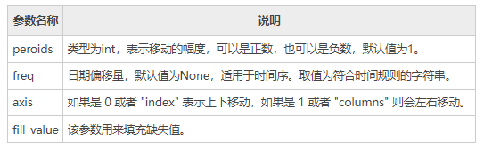
该函数的返回值是移动后的 DataFrame 副本。下面看一组简单的实例：
import pandas as pd
info= pd.DataFrame({'a_data': [40, 28, 39, 32, 18],
'b_data': [20, 37, 41, 35, 45],
'c_data': [22, 17, 11, 25, 15]})
#移动幅度为3
info.shift(periods=3)
输出结果：
下面使用 fill_value 参数填充 DataFrame 中的缺失值，如下所示：
import pandas as pd
info= pd.DataFrame({'a_data': [40, 28, 39, 32, 18],
'b_data': [20, 37, 41, 35, 45],
'c_data': [22, 17, 11, 25, 15]})
#移动幅度为3
print(info.shift(periods=3))
#将缺失值和原数值替换为52
info.shift(periods=3,axis=1,fill_value= 52)
输出结果：
原输出结果：
a_data b_data c_data
0 NaN NaN NaN
1 NaN NaN NaN
2 NaN NaN NaN
3 40.0 20.0 22.0
4 28.0 37.0 17.0
替换后输出：
a_data b_data c_data
0 52 52 52
1 52 52 52
2 52 52 52
3 52 52 52
4 52 52 52
注意：fill_value 参数不仅可以填充缺失值，还也可以对原数据进行替换。
五、Pandas Panel三维数据结构(略)¶
Panel 结构也称“面板结构”，它源自于 Panel Data 一词，翻译为“面板数据”。如果您使用的是 Pandas 0.25 以前的版本，那么您需要掌握本节内容，否则，作为了解内容即可。
Panel 是一个用来承载数据的三维数据结构，它有三个轴，分别是 items（0 轴），major_axis（1 轴），而 minor_axis（2 轴）。这三个轴为描述、操作 Panel 提供了支持，其作用介绍如下：
- items：axis =0，Panel 中的每个 items 都对应一个 DataFrame。
- major_axis：axis=1，用来描述每个 DataFrame 的行索引。
- minor_axis：axis=2，用来描述每个 DataFrame 的列索引。
1、pandas.Panel()¶
您可以使用下列构造函数创建一个 Panel，如下所示：
参数说明如下：
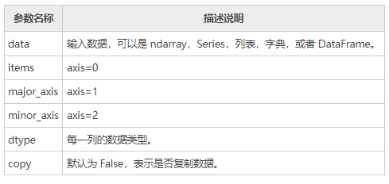
2、创建Panel 对象¶
下面介绍创建 Panel 对象的两种方式：一种是使用 nadarry 数组创建，另一种使用 DataFrame 对象创建。首先，我们学习如何创建一个空的 Panel 对象。
1) 创建一个空Panel
使用 Panel 的构造函数创建，如下所示：
输出结果：
<class 'pandas.core.panel.Panel'>
Dimensions: 0 (items) x 0 (major_axis) x 0 (minor_axis)
Items axis: None
Major_axis axis: None
Minor_axis axis: None
2) ndarray三维数组创建
import pandas as pd
import numpy as np
#返回均匀分布的随机样本值位于[0,1）之间
data = np.random.rand(2,4,5)
p = pd.Panel(data)
print (p)
输出结果：
<class 'pandas.core.panel.Panel'>
Dimensions: 2 (items) x 4 (major_axis) x 5 (minor_axis)
Items axis: 0 to 1
Major_axis axis: 0 to 3
Minor_axis axis: 0 to 4
请注意与上述示例的空 Panel 进行对比。
3) DataFrame创建
下面使用 DataFrame 创建一个 Panel，示例如下：
import pandas as pd
import numpy as np
data = {'Item1' : pd.DataFrame(np.random.randn(4, 3)),
'Item2' : pd.DataFrame(np.random.randn(4, 2))}
p = pd.Panel(data)
print(p)
输出结果：
Dimensions: 2 (items) x 4 (major_axis) x 3 (minor_axis)
Items axis: Item1 to Item2
Major_axis axis: 0 to 3
Minor_axis axis: 0 to 2
3、Panel中选取数据¶
如果想要从 Panel 对象中选取数据，可以使用 Panel 的三个轴来实现，也就是items``major_axis``minor_axis 。下面介绍其中一种，大家体验一下即可。
1) 使用 items选取数据
示例如下：
import pandas as pd
import numpy as np
data = {'Item1':pd.DataFrame(np.random.randn(4, 3)),
'Item2':pd.DataFrame(np.random.randn(4, 2))}
p = pd.Panel(data)
print(p['Item1'])
输出结果：
0 1 2
0 0.488224 -0.128637 0.930817
1 0.417497 0.896681 0.576657
2 -2.775266 0.571668 0.290082
3 -0.400538 -0.144234 1.110535
上述示例中 data，包含了两个数据项，我们选择了 item1，输出结果是 4 行 3 列的 DataFrame，其行、列索引分别对应 major_axis 和 minor_axis。
六、Python Pandas描述性统计¶
描述统计学（descriptive statistics）是一门统计学领域的学科，主要研究如何取得反映客观现象的数据，并以图表形式对所搜集的数据进行处理和显示，最终对数据的规律、特征做出综合性的描述分析。Pandas 库正是对描述统计学知识完美应用的体现，可以说如果没有“描述统计学”作为理论基奠，那么 Pandas 是否存在犹未可知。下列表格对 Pandas 常用的统计学函数做了简单的总结：
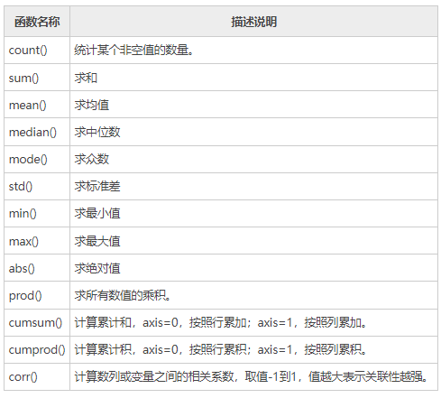
从描述统计学角度出发，我们可以对 DataFrame 结构执行聚合计算等其他操作，比如 sum() 求和、mean()求均值等方法。 在 DataFrame 中，使用聚合类方法时需要指定轴(axis)参数。下面介绍两种传参方式：
- 对行操作，默认使用 axis=0 或者使用 "index"；
- 对列操作，默认使用 axis=1 或者使用 "columns"。
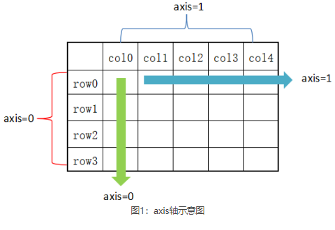
从图 1 可以看出，axis=0 表示按垂直方向进行计算，而 axis=1 则表示按水平方向。下面让我们创建一个 DataFrame，使用它对本节的内容进行演示。
创建一个 DataFrame 结构，如下所示：
import pandas as pd
import numpy as np
#创建字典型series结构
d = {'Name':pd.Series(['小明','小亮','小红','小华','老赵','小曹','小陈',
'老李','老王','小冯','小何','老张']),
'Age':pd.Series([25,26,25,23,30,29,23,34,40,30,51,46]),
'Rating':pd.Series([4.23,3.24,3.98,2.56,3.20,4.6,3.8,3.78,2.98,4.80,4.10,3.65])
}
df = pd.DataFrame(d)
print(df)
输出结果：
Name Age Rating
0 小明 25 4.23
1 小亮 26 3.24
2 小红 25 3.98
3 小华 23 2.56
4 老赵 30 3.20
5 小曹 29 4.60
6 小陈 23 3.80
7 老李 34 3.78
8 老王 40 2.98
9 小冯 30 4.80
10 小何 51 4.10
11 老张 46 3.65
1、sum()求和¶
在默认情况下，返回 axis=0 的所有值的和。示例如下：
import pandas as pd
import numpy as np
#创建字典型series结构
d = {'Name':pd.Series(['小明','小亮','小红','小华','老赵','小曹','小陈',
'老李','老王','小冯','小何','老张']),
'Age':pd.Series([25,26,25,23,30,29,23,34,40,30,51,46]),
'Rating':pd.Series([4.23,3.24,3.98,2.56,3.20,4.6,3.8,3.78,2.98,4.80,4.10,3.65])
}
df = pd.DataFrame(d)
#默认axis=0或者使用sum("index")
print(df.sum())
输出结果：
注意：sum() 和 cumsum() 函数可以同时处理数字和字符串数据。虽然字符聚合通常不被使用，但使用这两个函数并不会抛出异常；而对于 abs()、cumprod() 函数则会抛出异常，因为它们无法操作字符串数据。
下面再看一下 axis=1 的情况，如下所示：
import pandas as pd
import numpy as np
d = {'Name':pd.Series(['小明','小亮','小红','小华','老赵','小曹','小陈',
'老李','老王','小冯','小何','老张']),
'Age':pd.Series([25,26,25,23,30,29,23,34,40,30,51,46]),
'Rating':pd.Series([4.23,3.24,3.98,2.56,3.20,4.6,3.8,3.78,2.98,4.80,4.10,3.65])
}
df = pd.DataFrame(d)
#也可使用sum("columns")或sum(1)
print(df.sum(axis=1))
输出结果：
0 29.23
1 29.24
2 28.98
3 25.56
4 33.20
5 33.60
6 26.80
7 37.78
8 42.98
9 34.80
10 55.10
11 49.65
dtype: float64
2、mean()求均值¶
示例如下：
import pandas as pd
import numpy as np
d = {'Name':pd.Series(['小明','小亮','小红','小华','老赵','小曹','小陈',
'老李','老王','小冯','小何','老张']),
'Age':pd.Series([25,26,25,23,30,29,23,34,40,30,51,46]),
'Rating':pd.Series([4.23,3.24,3.98,2.56,3.20,4.6,3.8,3.78,2.98,4.80,4.10,3.65])
}
df = pd.DataFrame(d)
print(df.mean())
输出结果：
3、std()求标准差¶
返回数值列的标准差，示例如下：
import pandas as pd
import numpy as np
d = {'Name':pd.Series(['小明','小亮','小红','小华','老赵','小曹','小陈',
'老李','老王','小冯','小何','老张']),
'Age':pd.Series([25,26,25,23,59,19,23,44,40,30,51,54]),
'Rating':pd.Series([4.23,3.24,3.98,2.56,3.20,4.6,3.8,3.78,2.98,4.80,4.10,3.65])
}
df = pd.DataFrame(d)
print(df.std())
输出结果：
标准差是方差的算术平方根，它能反映一个数据集的离散程度。注意，平均数相同的两组数据，标准差未必相同。
4、数据汇总描述¶
describe() 函数显示与 DataFrame 数据列相关的统计信息摘要。示例如下：
import pandas as pd
import numpy as np
d = {'Name':pd.Series(['小明','小亮','小红','小华','老赵','小曹','小陈',
'老李','老王','小冯','小何','老张']),
'Age':pd.Series([25,26,25,23,30,29,23,34,40,30,51,46]),
'Rating':pd.Series([4.23,3.24,3.98,2.56,3.20,4.6,3.8,3.78,2.98,4.80,4.10,3.65])
}
#创建DataFrame对象
df = pd.DataFrame(d)
#求出数据的所有描述信息
print(df.describe())
输出结果：
Age Rating
count 12.000000 12.000000
mean 34.916667 3.743333
std 13.976983 0.661628
min 19.000000 2.560000
25% 24.500000 3.230000
50% 28.000000 3.790000
75% 45.750000 4.132500
max 59.000000 4.800000
describe() 函数输出了平均值、std 和 IQR 值(四分位距)等一系列统计信息。通过 describe() 提供的include
include 相关参数值说明如下：
- object： 表示对字符列进行统计信息描述；
- number：表示对数字列进行统计信息描述；
- all：汇总所有列的统计信息。
下面看一组示例，如下所示：
import pandas as pd
import numpy as np
d = {'Name':pd.Series(['小明','小亮','小红','小华','老赵','小曹','小陈',
'老李','老王','小冯','小何','老张']),
'Age':pd.Series([25,26,25,23,59,19,23,44,40,30,51,54]),
'Rating':pd.Series([4.23,3.24,3.98,2.56,3.20,4.6,3.8,3.78,2.98,4.80,4.10,3.65])
}
df = pd.DataFrame(d)
print(df.describe(include=["object"]))
输出结果：
最后使用all 参数，看一下输出结果，如下所示：
import pandas as pd
import numpy as np
d = {'Name':pd.Series(['小明','小亮','小红','小华','老赵','小曹','小陈',
'老李','老王','小冯','小何','老张']),
'Age':pd.Series([25,26,25,23,59,19,23,44,40,30,51,54]),
'Rating':pd.Series([4.23,3.24,3.98,2.56,3.20,4.6,3.8,3.78,2.98,4.80,4.10,3.65])
}
df = pd.DataFrame(d)
print(df.describe(include="all"))
输出结果：
Name Age Rating
count 12 12.000000 12.000000
unique 12 NaN NaN
top 小红 NaN NaN
freq 1 NaN NaN
mean NaN 34.916667 3.743333
std NaN 13.976983 0.661628
min NaN 19.000000 2.560000
25% NaN 24.500000 3.230000
50% NaN 28.000000 3.790000
75% NaN 45.750000 4.132500
max NaN 59.000000 4.800000
七、Pandas使用自定义函数（略）¶
如果想要应用自定义的函数，或者把其他库中的函数应用到 Pandas 对象中，有以下三种方法：
- 1) 操作整个 DataFrame 的函数：pipe()
- 2) 操作行或者列的函数：apply()
- 3) 操作单一元素的函数：applymap()
如何从上述函数中选择适合的函数，这取决于函数的操作对象。下面介绍了三种方法的使用。
1、操作整个数据表¶
通过给 pipe() 函数传递一个自定义函数和适当数量的参数值，从而操作 DataFrme 中的所有元素。下面示例，实现了数据表中的元素值依次加 3。 首先自定义一个函数，计算两个元素的加和，如下所示：
然后使用自定义的函数对 DataFrame 进行操作：
完整的程序，如下所示：
import pandas as pd
import numpy as np
#自定义函数
def adder(ele1,ele2):
return ele1+ele2
#操作DataFrame
df = pd.DataFrame(np.random.randn(4,3),columns=['c1','c2','c3'])
#相加前
print(df)
#相加后
print(df.pipe(adder,3))
输出结果：
c1 c2 c3
0 1.989075 0.932426 -0.523568
1 -1.736317 0.703575 -0.819940
2 0.657279 -0.872929 0.040841
3 0.441424 1.170723 -0.629618
c1 c2 c3
0 4.989075 3.932426 2.476432
1 1.263683 3.703575 2.180060
2 3.657279 2.127071 3.040841
3 3.441424 4.170723 2.370382
2、操作行或列¶
如果要操作 DataFrame 的某一行或者某一列，可以使用 apply() 方法，该方法与描述性统计方法类似，都有可选参数 axis，并且默认按列操作。示例如下：
import pandas as pd
import numpy as np
df = pd.DataFrame(np.random.randn(5,3),columns=['col1','col2','col3'])
df.apply(np.mean)
#默认按列操作，计算每一列均值
print(df.apply(np.mean))
输出结果：
传递轴参 axis=1， 表示逐行进行操作，示例如下：
import pandas as pd
import numpy as np
df = pd.DataFrame(np.random.randn(5,3),columns=['col1','col2','col3'])
print(df)
print (df.apply(np.mean,axis=1))
输出结果：
col1 col2 col3
0 0.210370 -0.662840 -0.281454
1 -0.875735 0.531935 -0.283924
2 1.036009 -0.958771 -1.048961
3 -1.266042 -0.257666 0.403416
4 0.496041 -1.071545 1.432817
0 -0.244641
1 -0.209242
2 -0.323908
3 -0.373431
4 0.285771
dtype: float64
求每一列中，最大值与最小值之差。示例如下：
import pandas as pd
import numpy as np
df = pd.DataFrame(np.random.randn(5,3),columns=['col1','col2','col3'])
print(df.apply(lambda x: x.max() - x.min()))
输出结果:
3、操作单一元素¶
DataFrame 数据表结构的 applymap() 和 Series 系列结构的 map() 类似，它们都可以接受一个 Python 函数，并返回相应的值。 示例如下：
import pandas as pd
import numpy as np
df = pd.DataFrame(np.random.randn(5,3),columns=['col1','col2','col3'])
#自定义函数lambda函数
print(df['col1'].map(lambda x:x*100))
输出结果：
下面示例使用了 applymap() 函数，如下所示：
import pandas as pd
import numpy as np
#自定义函数
df = pd.DataFrame(np.random.randn(5,3),columns=['col1','col2','col3'])
print(df.applymap(lambda x:x*10))
print(df.apply(np.mean))
输出结果：
col1 col2 col3
0 -1.055926 7.952690 15.225932
1 9.362457 -12.230732 7.663450
2 2.910049 -2.782934 2.073905
3 -12.008132 -1.444989 5.988144
4 2.877850 6.563894 8.192513
#求均值：
col1 0.041726
col2 -0.038841
col3 0.782879
dtype: float64
八、Pandas reindex重置索引¶
重置索引（reindex）可以更改原 DataFrame 的行标签或列标签，并使更改后的行、列标签与 DataFrame 中的数据逐一匹配。通过重置索引操作，您可以完成对现有数据的重新排序。如果重置的索引标签在原 DataFrame 中不存在，那么该标签对应的元素值将全部填充为 NaN。
1、重置行列标签¶
看一组简单示例：
import pandas as pd
import numpy as np
N=20
df = pd.DataFrame({
'A': pd.date_range(start='2016-01-01',periods=N,freq='D'),
'x': np.linspace(0,stop=N-1,num=N),
'y': np.random.rand(N),
'C': np.random.choice(['Low','Medium','High'],N).tolist(),
'D': np.random.normal(100, 10, size=(N)).tolist()
})
#重置行、列索引标签
df_reindexed = df.reindex(index=[0,2,5], columns=['A', 'C', 'B'])
print(df_reindexed)
输出结果：
现有 a、b 两个 DataFrame 对象，如果想让 a 的行索引与 b 相同，您可以使用 reindex_like() 方法。示例如下：
import pandas as pd
import numpy as np
a = pd.DataFrame(np.random.randn(10,3),columns=['col1','col2','col3'])
b = pd.DataFrame(np.random.randn(7,3),columns=['col1','col2','col3'])
a= a.reindex_like(b)
print(a)
输出结果：
col1 col2 col3
0 1.776556 -0.821724 -1.220195
1 -1.401443 0.317407 -0.663848
2 0.300353 -1.010991 0.939143
3 0.444041 -1.875384 0.846112
4 0.967159 0.369450 -0.414128
5 0.320863 -1.223477 -0.337110
6 -0.933665 0.909382 1.129481
上述示例，a 会按照 b 的形式重建行索引。需要特别注意的是，a 与 b 的列索引标签必须相同。
2、填充元素值¶
reindex_like() 提供了一个可选的参数method ，使用它来填充相应的元素值，参数值介绍如下：
- pad/ffill：向前填充值；
- bfill/backfill：向后填充值；
- nearest：从距离最近的索引值开始填充。
示例如下：
import pandas as pd
import numpy as np
df1 = pd.DataFrame(np.random.randn(6,3),columns=['col1','col2','col3'])
df2 = pd.DataFrame(np.random.randn(2,3),columns=['col1','col2','col3'])
#使df2和df1行标签相同
print(df2.reindex_like(df1))
#向前填充
print(df2.reindex_like(df1,method='ffill'))
输出结果：
#填充前
col1 col2 col3
0 0.129055 0.835440 0.383065
1 -0.357231 0.379293 1.211549
2 NaN NaN NaN
3 NaN NaN NaN
4 NaN NaN NaN
5 NaN NaN NaN
#填充后
col1 col2 col3
0 0.129055 0.835440 0.383065
1 -0.357231 0.379293 1.211549
2 -0.357231 0.379293 1.211549
3 -0.357231 0.379293 1.211549
4 -0.357231 0.379293 1.211549
5 -0.357231 0.379293 1.211549
3、限制填充行数¶
reindex_like() 还提供了一个额外参数 limit，该参数用来控制填充的最大行数。示例如下：
import pandas as pd
import numpy as np
df1 = pd.DataFrame(np.random.randn(6,3),columns=['col1','col2','col3'])
df2 = pd.DataFrame(np.random.randn(2,3),columns=['col1','col2','col3'])
print (df2.reindex_like(df1))
#最多填充2行
print (df2.reindex_like(df1,method='ffill',limit=2))
输出结果：
col1 col2 col3
0 -1.829469 0.310332 -2.008861
1 -1.038512 0.749333 -0.094335
2 NaN NaN NaN
3 NaN NaN NaN
4 NaN NaN NaN
5 NaN NaN NaN
col1 col2 col3
0 -1.829469 0.310332 -2.008861
1 -1.038512 0.749333 -0.094335
2 -1.038512 0.749333 -0.094335
3 -1.038512 0.749333 -0.094335
4 NaN NaN NaN
5 NaN NaN NaN
由上述示例可以看出，填充了 2、3 行 缺失值，也就是只填充了 2 行数据。
4、重命名标签¶
rename() 方法允许您使用某些映射(dict或Series)或任意函数来对行、列标签重新命名，示例如下：
import pandas as pd
import numpy as np
df1 = pd.DataFrame(np.random.randn(6,3),columns=['col1','col2','col3'])
print (df1)
#对行和列重新命名
print (df1.rename(columns={'col1' : 'c1', 'col2' : 'c2'},index = {0 : 'apple', 1 : 'banana', 2 : 'durian'}))
输出结果：
col1 col2 col3
0 -1.762133 -0.636819 -0.309572
1 -0.093965 -0.924387 -2.031457
2 -1.231485 -0.738667 1.415724
3 -0.826322 0.206574 -0.731701
4 1.863816 -0.175705 0.491907
5 0.677361 0.870041 -0.636518
c1 c2 col3
apple -1.762133 -0.636819 -0.309572
banana -0.093965 -0.924387 -2.031457
durian -1.231485 -0.738667 1.415724
3 -0.826322 0.206574 -0.731701
4 1.863816 -0.175705 0.491907
5 0.677361 0.870041 -0.636518
rename() 方法提供了一个 inplace 参数，默认值为 False，表示拷贝一份原数据，并在复制后的数据上做重命名操作。若 inplace=True 则表示在原数据的基础上重命名。
九、Pandas iteration遍历¶
遍历是众多编程语言中必备的一种操作，比如 Python 语言通过 for 循环来遍历列表结构。那么 Pandas 是如何遍历 Series 和 DataFrame 结构呢？我们应该明确，它们的数据结构类型不同的，遍历的方法必然会存在差异。对于 Series 而言，您可以把它当做一维数组进行遍历操作；而像 DataFrame 这种二维数据表结构，则类似于遍历 Python 字典。
在 Pandas 中同样也是使用 for 循环进行遍历。通过for遍历后，Series 可直接获取相应的 value，而 DataFrame 则会获取列标签。示例如下：
import pandas as pd
import numpy as np
N=20
df = pd.DataFrame({
'A': pd.date_range(start='2016-01-01',periods=N,freq='D'),
'x': np.linspace(0,stop=N-1,num=N),
'y': np.random.rand(N),
'C': np.random.choice(['Low','Medium','High'],N).tolist(),
'D': np.random.normal(100, 10, size=(N)).tolist()
})
print(df)
for col in df:
print (col)
输出结果：
1、内置迭代方法¶
如果想要遍历 DataFrame 的每一行，我们下列函数：
- 1) iteritems()：以键值对 (key,value) 的形式遍历；
- 2) iterrows()：以 (row_index,row) 的形式遍历行;
- 3) itertuples()：使用已命名元组的方式对行遍历。
下面对上述函数做简单的介绍：
1) iteritems()
以键值对的形式遍历 DataFrame 对象，以列标签为键，以对应列的元素为值。
import pandas as pd
import numpy as np
df = pd.DataFrame(np.random.randn(4,3),columns=['col1','col2','col3'])
for key,value in df.iteritems():
print(key,value)
输出结果：
col1
0 0.561693
1 0.537196
2 0.882564
3 1.063245
Name: col1, dtype: float64
col2
0 -0.115913
1 -0.526211
2 -1.232818
3 -0.313741
Name: col2, dtype: float64
col3
0 0.103138
1 -0.655187
2 -0.101757
3 1.505089
Name: col3, dtype: float64
2) iterrows()
该方法按行遍历，返回一个迭代器，以行索引标签为键，以每一行数据为值。示例如下：
import pandas as pd
import numpy as np
df = pd.DataFrame(np.random.randn(3,3),columns = ['col1','col2','col3'])
print(df)
for row_index,row in df.iterrows():
print (row_index,row)
输出结果：
col1 col2 col3
0 -0.319301 0.205636 0.247029
1 0.673788 0.874376 1.286151
2 0.853439 0.543066 -1.759512
0
col1 -0.319301
col2 0.205636
col3 0.247029
Name: 0, dtype: float64
1
col1 0.673788
col2 0.874376
col3 1.286151
Name: 1, dtype: float64
2
col1 0.853439
col2 0.543066
col3 -1.759512
Name: 2, dtype: float64
注意：iterrows() 遍历行，其中 0,1,2 是行索引而 col1,col2,col3 是列索引。
3) itertuples
itertuples() 同样将返回一个迭代器，该方法会把 DataFrame 的每一行生成一个元组，示例如下：
import pandas as pd
import numpy as np
df = pd.DataFrame(np.random.rand(3,3),columns = ['c1','c2','c3'])
for row in df.itertuples():
print(row)
输出结果：
Pandas(Index=0, c1=0.253902385555437, c2=0.9846386610838339, c3=0.8814786409138894)
Pandas(Index=1, c1=0.018667367298908943, c2=0.5954745800963542, c3=0.04614488622991075)
Pandas(Index=2, c1=0.3066297875412092, c2=0.17984210928723543, c3=0.8573031941082285)
2、迭代返回副本¶
迭代器返回的是原对象的副本，所以，如果在迭代过程中修改元素值，不会影响原对象，这一点需要大家注意。 看一组简单的示例：
import pandas as pd
import numpy as np
df = pd.DataFrame(np.random.randn(3,3),columns = ['col1','col2','col3'])
for index, row in df.iterrows():
row['a'] = 15
print(df)
输出结果：
col1 col2 col3
0 1.601068 -0.098414 -1.744270
1 -0.432969 -0.233424 0.340330
2 -0.062910 1.413592 0.066311
由上述示例可见，原对象df没有受到任何影响。
十、Pandas sorting排序¶
Pands 提供了两种排序方法，分别是按标签排序和按数值排序。本节讲解 Pandas 的排序操作。
下面创建一组 DataFrame 数据，如下所示：
import pandas as pd
import numpy as np
#行标签乱序排列，列标签乱序排列
unsorted_df=pd.DataFrame(np.random.randn(10,2),index=[1,6,4,2,3,5,9,8,0,7],columns=['col2','col1'])
print(unsorted_df)
输出结果：
col2 col1
1 -0.053290 -1.442997
6 -0.203066 -0.702727
4 0.111759 0.965251
2 -0.896778 1.100156
3 -0.458899 -0.890152
5 -0.222691 -0.144881
9 -0.921674 0.510045
8 -0.130748 -0.734237
0 0.617717 0.456848
7 0.804284 0.653961
上述示例，行标签和数值元素均未排序，下面分别使用标签排序、数值排序对其进行操作。
1、按标签排序¶
使用 sort_index() 方法对行标签排序，指定轴参数（axis）或者排序顺序。或者可以对 DataFrame 进行排序。默认情况下，按照行标签序排序。
import pandas as pd
import numpy as np
unsorted_df = pd.DataFrame(np.random.randn(10,2),index=[1,4,6,2,3,5,9,8,0,7],columns = ['col2','col1'])
sorted_df=unsorted_df.sort_index()
print(sorted_df)
输出结果：
col2 col1
0 2.113698 -0.299936
1 -0.550613 0.501497
2 0.056210 0.451781
3 0.074262 -1.249118
4 -0.038484 -0.078351
5 0.812215 -0.757685
6 0.687233 -0.356840
7 -0.483742 0.632428
8 -1.576988 -1.425604
9 0.776720 1.182877
1) 排序顺序
通过将布尔值传递给ascending 参数，可以控制排序的顺序（行号顺序）。示例如下：
import pandas as pd
import numpy as np
unsorted_df = pd.DataFrame(np.random.randn(10,2),index=[1,4,6,2,3,5,9,8,0,7],columns = ['col2','col1'])
sorted_df = unsorted_df.sort_index(ascending=False)
print(sorted_df)
输出结果：
col2 col1
9 2.389933 1.152328
8 -0.374969 0.182293
7 -0.823322 -0.104431
6 -0.566627 -1.020679
5 1.021873 0.315927
4 0.127070 -1.598591
3 0.258097 0.389310
2 -1.027768 -0.582664
1 0.766471 -0.043638
0 0.482486 -0.512309
2、按列标签排序¶
通过给 axis 轴参数传递 0 或 1，可以对列标签进行排序。默认情况下，axis=0 表示按列排序；而 axis=1 则表示按行排序。
import pandas as pd
import numpy as np
unsorted_df = pd.DataFrame(np.random.randn(10,2),index=[1,4,6,2,3,5,9,8,0,7],columns = ['col2','col1'])
sorted_df=unsorted_df.sort_index(axis=1)
print(sorted_df)
输出结果：
col1 col2
1 -1.424992 -0.062026
4 -0.083513 1.884481
6 -1.335838 0.838729
2 -0.085384 0.178404
3 1.198965 0.089953
5 1.400264 0.213751
9 -0.992759 0.015740
8 1.586437 -0.406583
0 -0.842969 0.490832
7 -0.310137 0.485835
3、按值排序¶
与标签排序类似，sort_values() 表示按值排序。它接受一个by 参数，该参数值是要排序数列的 DataFrame 列名。示例如下：
import pandas as pd
import numpy as np
unsorted_df = pd.DataFrame({'col1':[2,1,1,1],'col2':[1,3,2,4]})
sorted_df = unsorted_df.sort_values(by='col1')
print(sorted_df)
输出结果：
注意：当对 col1 列排序时，相应的 col2 列的元素值和行索引也会随 col1 一起改变。by 参数可以接受一个列表参数值，如下所示：
import pandas as pd
import numpy as np
unsorted_df = pd.DataFrame({'col1':[2,1,1,1],'col2':[1,3,2,4]})
sorted_df = unsorted_df.sort_values(by=['col1','col2'])
print(sorted_df）
输出结果：
4、排序算法¶
sort_values() 提供了参数kind 用来指定排序算法。这里有三种排序算法：
- mergesort
- heapsort
- quicksort
默认为 quicksort(快速排序) ，其中 Mergesort 归并排序是最稳定的算法。
import pandas as pd
import numpy as np
unsorted_df = pd.DataFrame({'col1':[2,1,1,1],'col2':[1,3,2,4]})
sorted_df = unsorted_df.sort_values(by='col1' ,kind='mergesort')
print(sorted_df)
输出结果：
十一、Pandas去重函数¶
“去重”通过字面意思不难理解，就是删除重复的数据。在一个数据集中，找出重复的数据并将其删除，最终只保存一个唯一存在的数据项，这就是数据去重的整个过程。删除重复数据是数据分析中经常会遇到的一个问题。通过数据去重，不仅可以节省内存空间，提高写入性能，还可以提升数据集的精确度，使得数据集不受重复数据的影响。
Pandas DataFrame 对象提供了一个数据去重的函数 drop_duplicates()，本节对该函数的用法做详细介绍。
1、函数格式¶
drop_duplicates()函数的语法格式如下：
参数说明如下：
- subset：表示要去重的列名，默认为 None。
- keep：有三个可选参数，分别是 first、last、False，默认为 first，表示只保留第一次出现的重复项，删除其余重复项，last 表示只保留最后一次出现的重复项，False 则表示删除所有重复项。
- inplace：布尔值参数，默认为 False 表示删除重复项后返回一个副本，若为 Ture 则表示直接在原数据上删除重复项。
2、实际应用¶
首先创建一个包含有重复值的 DataFrame 对象，如下所示：
import pandas as pd
data={
'A':[1,0,1,1],
'B':[0,2,5,0],
'C':[4,0,4,4],
'D':[1,0,1,1]
}
df=pd.DataFrame(data=data)
print(df)
输出结果：
1) 默认保留第一次出现的重复项
import pandas as pd
data={
'A':[1,0,1,1],
'B':[0,2,5,0],
'C':[4,0,4,4],
'D':[1,0,1,1]
}
df=pd.DataFrame(data=data)
#默认保留第一次出现的重复项
df.drop_duplicates()
输出结果：
2) keep=False删除所有重复项
import pandas as pd
data={
'A':[1,0,1,1],
'B':[0,2,5,0],
'C':[4,0,4,4],
'D':[1,0,1,1]
}
df=pd.DataFrame(data=data)
#默认保留第一次出现的重复项
df.drop_duplicates(keep=False)
输出结果：
3) 根据指定列标签去重
import pandas as pd
data={
'A':[1,3,3,3],
'B':[0,1,2,0],
'C':[4,5,4,4],
'D':[3,3,3,3]
}
df=pd.DataFrame(data=data)
#去除所有重复项，对于B列来说两个0是重复项
df.drop_duplicates(subset=['B'],keep=False)
#简写，省去subset参数
#df.drop_duplicates(['B'],keep=False)
print(df)
输出结果：
从上述示例可以看出，删除重复项后，行标签使用的数字是原来的，并没有从 0 重新开始，那么我们应该怎么从 0 重置索引呢？Pandas 提供的 reset_index() 函数会直接使用重置后的索引。如下所示：
import pandas as pd
data={
'A':[1,3,3,3],
'B':[0,1,2,0],
'C':[4,5,4,4],
'D':[3,3,3,3]
}
df=pd.DataFrame(data=data)
#去除所有重复项，对于B来说两个0是重复项
df=df.drop_duplicates(subset=['B'],keep=False)
#重置索引，从0重新开始
df.reset_index(drop=True)
输出结果：
4) 指定多列同时去重
创建一个 DataFrame 对象，如下所示：
import numpy as np
import pandas as pd
df = pd.DataFrame({'Country ID':[1,1,2,12,34,23,45,34,23,12,2,3,4,1],
'Age':[12,12,15,18, 19, 25, 21, 25, 25, 18, 25,12,32,18],
'Group ID':['a','z','c','a','b','s','d','a','b','s','a','d','a','f']})
#last只保留最后一个重复项
df.drop_duplicates(['Age','Group ID'],keep='last')
输出结果：
Country ID Age Group ID
0 1 12 a
1 1 12 z
2 2 15 c
3 3 18 a
4 4 19 b
5 3 25 s
6 4 21 d
8 2 25 b
9 1 18 s
10 2 25 a
11 3 12 d
12 4 32 a
13 1 18 f
上述数据集中，第 7 行、第 10 行对应的列标签数据相同，我们使用参数值“last”保留最后一个重复项，也就是第 10 行数据。
十二、Python Pandas处理字符串¶
Pandas 提供了一系列的字符串函数，因此能够很方便地对字符串进行处理。在本节，我们使用 Series 对象对常用的字符串函数进行讲解。
常用的字符串处理函数如下表所示：
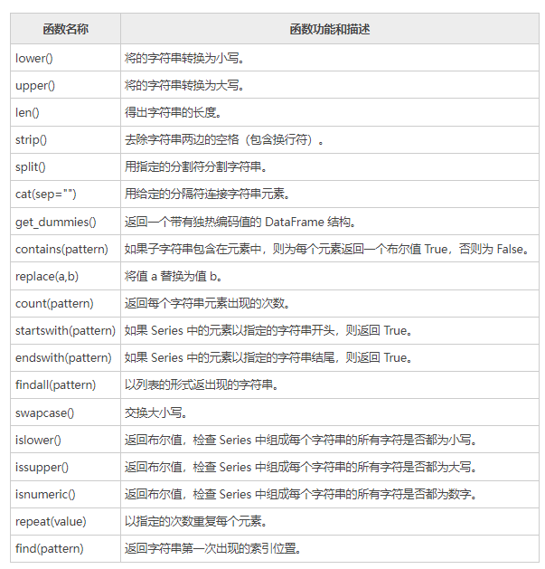
注意：上述所有字符串函数全部适用于 DataFrame 对象，同时也可以与 Python 内置的字符串函数一起使用，这些函数在处理 Series/DataFrame 对象的时候会自动忽略缺失值数据（NaN）。
lower()¶
import pandas as pd
import numpy as np
s = pd.Series(['C', 'Python', 'java', 'go', np.nan, '1125','javascript'])
print(s.str.lower())
输出结果：
len()¶
import pandas as pd
import numpy as np
s = pd.Series(['C', 'Python', 'java', 'go', np.nan, '1125','javascript'])
print(s.str.len())
输出结果：
strip()¶
import pandas as pd
import numpy as np
s = pd.Series(['C ', ' Python', 'java', 'go', np.nan, '1125 ','javascript'])
print(s.str.strip())
输出结果：
split(pattern)¶
import pandas as pd
import numpy as np
s = pd.Series(['C ',' Python','java','go','1125 ','javascript'])
print(s.str.split(" "))
输出结果：
cat(sep="")¶
import pandas as pd
import numpy as np
s = pd.Series(['C', 'Python', 'java', 'go', np.nan, '1125','javascript'])#会自动忽略NaN
print(s.str.cat(sep="_"))
输出结果：
get_dummies()¶
import pandas as pd
import numpy as np
s = pd.Series(['C', 'Python', 'java', 'go', np.nan, '1125','javascript'])
print(s.str.get_dummies())
输出结果：
1125 C Python go java javascript
0 0 1 0 0 0 0
1 0 0 1 0 0 0
2 0 0 0 0 1 0
3 0 0 0 1 0 0
4 0 0 0 0 0 0
5 1 0 0 0 0 0
6 0 0 0 0 0 1
contains()¶
检查 Series 中的每个字符，如果字符中包含空格，则返回 True，否则返回 False。示例如下： 输出结果：
import pandas as pd
import numpy as np
s = pd.Series(['C ',' Python','java','go','1125 ','javascript'])
print(s.str.contains(" "))
输出结果：
repeat()¶
import pandas as pd
import numpy as np
s = pd.Series(['C ',' Python','java','go','1125 ','javascript'])
print(s.str.repeat(3))
输出结果：
0 C C C
1 Python Python Python
2 javajavajava
3 gogogo
4 1125 1125 1125
5 javascriptjavascriptjavascript
dtype: object
startswith()¶
import pandas as pd
import numpy as np
#若以指定的"j"开头则返回True
s = pd.Series(['C ',' Python','java','go','1125 ','javascript'])
print(s.str.startswith("j"))
输出结果：
find()¶
import pandas as pd
import numpy as np
s = pd.Series(['C ',' Python','java','go','1125 ','javascript'])
print(s.str.find("j"))
输出结果：
如果返回 -1 表示该字符串中没有出现指定的字符。
findall()¶
import pandas as pd
import numpy as np
s = pd.Series(['C ',' Python','java','go','1125 ','javascript'])
print(s.str.findall("j"))
输出结果：
swapcase()¶
import pandas as pd
import numpy as np
s = pd.Series(['C ',' Python','java','go','1125 ','javascript'])
print(s.str.swapcase())
输出结果：
isnumeric()¶
返回一个布尔值，用来判断是否存在数字型字符串。示例如下：
import pandas as pd
import numpy as np
s = pd.Series(['C ',' Python','java','go','1125','javascript'])
print(s.str.isnumeric())
输出结果：
十三、Pandas设置数据显示格式¶
在用 Pandas 做数据分析的过程中，总需要打印数据分析的结果，如果数据体量较大就会存在输出内容不全（部分内容省略）或者换行错误等问题。Pandas 为了解决上述问题，允许你对数据显示格式进行设置。下面列出了五个用来设置显示格式的函数，分别是：
-
get_option()
-
set_option()
-
reset_option()
-
describe_option()
-
option_context()
它们的功能介绍如下：
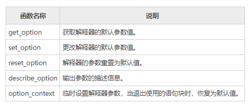
下面对上述函数分别进行介绍。
1、get_option()¶
该函数接受单一参数，用来获取显示上限的行数或者列数，示例如下：
1) display.max_rows
获取显示上限的行数，示例如下：
输出结果：
2) display.max_columns
获取显示上限的列数，示例如下：
输出结果：
由此可知，默认值显示上限是（60，20）。
2、set_option()¶
该函数用来更改要默认显示的行数和列数，示例如下：
1) 修改默认行数
输出结果：
2) 修改默认列数
import pandas as pd
pd.set_option("display.max_columns",40)
print(pd.get_option("display.max_columns"))
输出结果：
3、reset_option()¶
该方法接受一个参数，并将修改后的值设置回默认值。示例如下：
import pandas as pd
pd.reset_option("display.max_rows")
#恢复为默认值
print(pd.get_option("display.max_rows"))
输出结果：
4、describe_option()¶
该方法输出参数的描述信息。示例如下：
输出结果：
display.max_rows : int
If max_rows is exceeded, switch to truncate view. Depending on
`large_repr`, objects are either centrally truncated or printed as
a summary view. 'None' value means unlimited.
In case python/IPython is running in a terminal and `large_repr`
equals 'truncate' this can be set to 0 and pandas will auto-detect
the height of the terminal and print a truncated object which fits
the screen height. The IPython notebook, IPython qtconsole, or
IDLE do not run in a terminal and hence it is not possible to do
correct auto-detection.
[default: 60] [currently: 60]
5、option_context()¶
option_context() 上下文管理器，用于临时设置 with 语句块中的默认显示参数。当您退出 with 语句块时，参数值会自动恢复。示例如下：
import pandas as pd
with pd.option_context("display.max_rows",10):
print(pd.get_option("display.max_rows"))
print(pd.get_option("display.max_rows"))
输出结果：
注意：第一个 Print 语句打印 option_context() 设置的临时值。当退出 with 语句块时，第二个 Print 语句打印解释器默认值。
6、常用参数项¶
最后，对上述函数常用的参数项做以下总结：
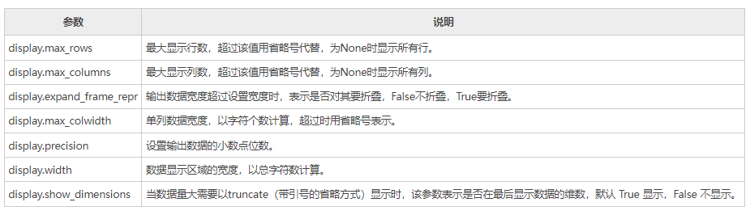
上述参数项，基本上可以满足我们的日常需求。
十四、Pandas loc/iloc用法详解¶
在数据分析过程中，很多时候需要从数据表中提取出相应的数据，而这么做的前提是需要先“索引”出这一部分数据。虽然通过 Python 提供的索引操作符"[]"和属性操作符"."可以访问 Series 或者 DataFrame 中的数据，但这种方式只适应与少量的数据，为了解决这一问题，Pandas 提供了两种类型的索引方式来实现数据的访问。
本节就来讲解一下，如何在 Pandas 中使用 loc 函数和 iloc 函数。两种函数说明如下：
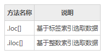
1、.loc[]¶
df.loc[] 只能使用标签索引，不能使用整数索引。当通过标签索引的切片方式来筛选数据时，它的取值前闭后闭，也就是只包括边界值标签（开始和结束）。 .loc[] 具有多种访问方法，如下所示：
- 一个标量标签
- 标签列表
- 切片对象
- 布尔数组
loc[] 接受两个参数，并以',' 分隔。第一个位置表示行，第二个位置表示列。示例如下：
import numpy as np
import pandas as pd
#创建一组数据
data = {'name': ['John', 'Mike', 'Mozla', 'Rose', 'David', 'Marry', 'Wansi', 'Sidy', 'Jack', 'Alic'],
'age': [20, 32, 29, np.nan, 15, 28, 21, 30, 37, 25],
'gender': [0, 0, 1, 1, 0, 1, 0, 0, 1, 1],
'isMarried': ['yes', 'yes', 'no', 'yes', 'no', 'no', 'no', 'yes', 'no', 'no']}
label = ['a', 'b', 'c', 'd', 'e', 'f', 'g', 'h', 'i', 'j']
df = pd.DataFrame(data, index=label)
print(df)
#对行操作
print(df.loc['a':'d',:]) #等同于df.loc['a':'d']
输出结果：
name age gender isMarried
a John 20.0 0 yes
b Mike 32.0 0 yes
c Mozla 29.0 1 no
d Rose NaN 1 yes
e David 15.0 0 no
f Marry 28.0 1 no
g Wansi 21.0 0 no
h Sidy 30.0 0 yes
i Jack 37.0 1 no
j Alic 25.0 1 no
#从a到d,切记包含d
name age gender isMarried
a John 20.0 0 yes
b Mike 32.0 0 yes
c Mozla 29.0 1 no
d Rose NaN 1 yes
对列进行操作，示例如下：
import numpy as np
import pandas as pd
#创建一组数据
data = {'name': ['John', 'Mike', 'Mozla', 'Rose', 'David', 'Marry', 'Wansi', 'Sidy', 'Jack', 'Alic'],
'age': [20, 32, 29, np.nan, 15, 28, 21, 30, 37, 25],
'gender': [0, 0, 1, 1, 0, 1, 0, 0, 1, 1],
'isMarried': ['yes', 'yes', 'no', 'yes', 'no', 'no', 'no', 'yes', 'no', 'no']}
label = ['a', 'b', 'c', 'd', 'e', 'f', 'g', 'h', 'i', 'j']
df = pd.DataFrame(data, index=label)
print(df.loc[:,'name'])
输出结果：
对行和列同时操作，示例如下：
import pandas as pd
import numpy as np
df = pd.DataFrame(np.random.randn(8, 4),
index = ['a','b','c','d','e','f','g','h'], columns = ['A', 'B', 'C', 'D'])
print(df.loc[['a','b','f','h'],['A','C']])
输出如下：
布尔值操作，示例如下：
import pandas as pd
import numpy as np
df = pd.DataFrame(np.random.randn(4, 4),index = ['a','b','c','d'], columns = ['A', 'B', 'C', 'D'])
#返回一组布尔值
print(df.loc['b']>0)
输出结果：
2、 .iloc[]¶
df.iloc[] 只能使用整数索引，不能使用标签索引，通过整数索引切片选择数据时，前闭后开(不包含边界结束值)。同 Python 和 NumPy 一样，它们的索引都是从 0 开始。 .iloc[] 提供了以下方式来选择数据：
- 1) 整数索引
- 2) 整数列表
- 3) 数值范围
示例如下：
data = {'name': ['John', 'Mike', 'Mozla', 'Rose', 'David', 'Marry', 'Wansi', 'Sidy', 'Jack', 'Alic'],
'age': [20, 32, 29, np.nan, 15, 28, 21, 30, 37, 25],
'gender': [0, 0, 1, 1, 0, 1, 0, 0, 1, 1],
'isMarried': ['yes', 'yes', 'no', 'yes', 'no', 'no', 'no', 'yes', 'no', 'no']}
label = ['a', 'b', 'c', 'd', 'e', 'f', 'g', 'h', 'i', 'j']
df = pd.DataFrame(data, index=label)
print(df)
print(df.iloc[2:,])
输出结果：
name age gender isMarried
a John 20.0 0 yes
b Mike 32.0 0 yes
c Mozla 29.0 1 no
d Rose NaN 1 yes
e David 15.0 0 no
f Marry 28.0 1 no
g Wansi 21.0 0 no
h Sidy 30.0 0 yes
i Jack 37.0 1 no
j Alic 25.0 1 no
name Mozla
age 29
gender 1
isMarried no
Name: c, dtype: object
再看一组示例：
import pandas as pd
import numpy as np
df = pd.DataFrame(np.random.randn(8, 4), columns = ['A', 'B', 'C', 'D'])
print df.iloc[[1, 3, 5], [1, 3]]
print df.iloc[1:3, :]
print df.iloc[:,1:3]
输出结果：
B D
1 0.773595 -0.206061
3 -1.740403 -0.464383
5 1.046009 0.606808
A B C D
1 -0.093711 0.773595 0.966408 -0.206061
2 -1.122587 -0.135011 0.546475 -0.551403
B C
0 0.623488 3.328406
1 0.773595 0.966408
2 -0.135011 0.546475
3 -1.740403 -0.869073
4 0.591573 -1.463275
5 1.046009 2.330035
6 -0.266607 0.873971
7 -1.059625 -0.405340
十五、Python Pandas统计函数¶
Pandas 的本质是统计学原理在计算机领域的一种应用实现，通过编程的方式达到分析、描述数据的目的。而统计函数则是统计学中用于计算和分析数据的一种工具。在数据分析的过程中，使用统计函数有助于我们理解和分析数据。本节将学习几个常见的统计函数，比如百分比函数、协方差函数、相关系数等。
1、百分比变化(pct_change)¶
Series 和 DatFrames 都可以使用 pct_change() 函数。该函数将每个元素与其前一个元素进行比较，并计算前后数值的百分比变化。示例如下：
import pandas as pd
import numpy as np
#Series结构
s = pd.Series([1,2,3,4,5,4])
print (s.pct_change())
#DataFrame
df = pd.DataFrame(np.random.randn(5,2))
print(df.pct_change())
输出结果：
0 NaN
1 1.000000
2 0.500000
3 0.333333
4 0.250000
5 -0.200000
dtype: float64
0 1
0 NaN NaN
1 74.779242 0.624260
2 -0.353652 -1.104352
3 -2.422813 -13.994103
4 -3.828316 -1.853092
默认情况下，pct_change() 对列进行操作，如果想要操作行，则需要传递参数 axis=1 参数。示例如下：
import pandas as pd
import numpy as np
#DataFrame
df = pd.DataFrame(np.random.randn(3, 2))
print(df.pct_change(axis=1))
输出结果：
2、协方差(cov)¶
Series 对象提供了一个cov 方法用来计算 Series 对象之间的协方差。同时，该方法也会将缺失值(NAN )自动排除。
标准差和方差一般是用来描述一维数据的，但现实生活我们常常遇到含有多维数据的数据集，最简单的大家上学时免不了要统计多个学科的考试成绩。面对这样的数据集，我们当然可以按照每一维独立的计算其方差，但是通常我们还想了解更多，比如，一个男孩子的猥琐程度跟他受女孩子欢迎程度是否存在一些联系啊，嘿嘿~协方差就是这样一种用来度量两个随机变量关系的统计量 , 协方差的结果有什么意义呢？如果结果为正值，则说明两者是正相关的(从协方差可以引出“相关系数”的定义)，也就是说一个人越猥琐就越受女孩子欢迎，嘿嘿，那必须的~结果为负值就说明负相关的，越猥琐女孩子越讨厌，可能吗？如果为0，也是就是统计上说的“相互独立”。
示例如下：
import pandas as pd
import numpy as np
s1 = pd.Series(np.random.randn(10))
s2 = pd.Series(np.random.randn(10))
print (s1.cov(s2))
输出结果：
当应用于 DataFrame 时，协方差（cov）将计算所有列之间的协方差。
import pandas as pd
import numpy as np
frame = pd.DataFrame(np.random.randn(10, 5), columns=['a', 'b', 'c', 'd', 'e'])
#计算a与b之间的协方差值
print (frame['a'].cov(frame['b']))
#计算所有数列的协方差值
print (frame.cov())
输出结果：
-0.37822395480394827
a b c d e
a 1.643529 -0.378224 0.181642 0.049969 -0.113700
b -0.378224 1.561760 -0.054868 0.144664 -0.231134
c 0.181642 -0.054868 0.628367 -0.125703 0.324442
d 0.049969 0.144664 -0.125703 0.480301 -0.388879
e -0.113700 -0.231134 0.324442 -0.388879 0.848377
3、相关系数(corr)¶
相关系数显示任意两个 Series 之间的线性关系。Pandas 提供了计算相关性的三种方法，分别是 pearson(default)、spearman() 和 kendall()。
检查两个变量之间变化趋势的方向以及程度，值范围-1到+1，0表示两个变量不相关，正值表示正相关，负值表示负相关，值越大相关性越强
import pandas as pd
import numpy as np
df = pd.DataFrame(np.random.randn(10, 5), columns=['a', 'b', 'c', 'd', 'e'])
print (df['b'].corr(frame['c']))
print (df.corr())
输出结果：
0.5540831507407936
a b c d e
a 1.000000 -0.500903 -0.058497 -0.767226 0.218416
b -0.500903 1.000000 -0.091239 0.805388 -0.020172
c -0.058497 -0.091239 1.000000 0.115905 0.083969
d -0.767226 0.805388 0.115905 1.000000 0.015028
e 0.218416 -0.020172 0.083969 0.015028 1.000000
注意：如果 DataFrame 存在非数值(NAN），该方法会自动将其删除。
4、排名(rank)¶
rank() 按照某种规则（升序或者降序）对序列中的元素值排名，该函数的返回值的也是一个序列，包含了原序列中每个元素值的名次。如果序列中包含两个相同的的元素值，那么会为其分配两者的平均排名。示例如下：
import pandas as pd
import numpy as np
#返回5个随机值，然后使用rank对其排名
s = pd.Series(np.random.randn(5), index=list('abcde'))
s['d'] = s['b']
print(s)
#b/d排名分别为2和3，其平均排名为2.5
print(s.rank())
输出结果：
a -0.689585
b -0.545871
c 0.148264
d -0.545871
e -0.205043
dtype: float64
排名后输出:
a 1.0
b 2.5
c 5.0
d 2.5
e 4.0
dtype: float64
1) method参数
rank() 提供了 method 参数，可以针对相同数据，进行不同方式的排名。如下所示：
- average：默认值，如果数据相同则分配平均排名；
- min：给相同数据分配最低排名；
- max：给相同数据分配最大排名；
- first：对于相同数据，根据出现在数组中的顺序进行排名。
2) axis&ascening
rank() 有一个ascening 参数， 默认为 True 代表升序；如果为 False，则表示降序排名（将较大的数值分配给较小的排名）。
rank() 默认按行方向排名（axis=0），也可以更改为 axis =1，按列排名。示例如下：
import pandas as pd
import numpy as np
a = pd.DataFrame(np.arange(12).reshape(3,4),columns = list("abdc"))
a =a.sort_index(axis=1,ascending=False)
a.iloc[[1,1],[1,2]] = 6
#按行排名，将相同数值设置为所在行数值的最大排名
print(a.rank(axis=1,method="max"))
输出结果：
与 method="min"进行对比，如下所示：
import pandas as pd
import numpy as np
a = pd.DataFrame(np.arange(12).reshape(3,4),columns = list("abdc"))
a =a.sort_index(axis=1,ascending=False)
a.iloc[[1,1],[1,2]] = 6
#按行排名，将相同数值设置为所在行数值的最小排名
print(a.rank(axis=1,method="min"))
输出结果：
十六、Python Pandas窗口函数¶
为了能更好地处理数值型数据，Pandas 提供了几种窗口函数，比如移动函数（rolling）、扩展函数（expanding）和指数加权函数（ewm）。
窗口函数应用场景非常多。举一个简单的例子：现在有 10 天的销售额，而您想每 3 天求一次销售总和，也就说第五天的销售额等于（第三天 + 第四天 + 第五天）的销售额之和，此时窗口函数就派上用场了。
本节学习主要讲解如何在 DataFrame 和 Series 对象上应用窗口函数。
1、rolling()¶
rolling() 又称移动窗口函数，它可以与 mean、count、sum、median、std 等聚合函数一起使用。为了使用方便，Pandas 为移动函数定义了专门的方法聚合方法，比如 rolling().mean()、rolling().count()、rolling().sum() 等。其的语法格式如下：
常用参数说明如下：
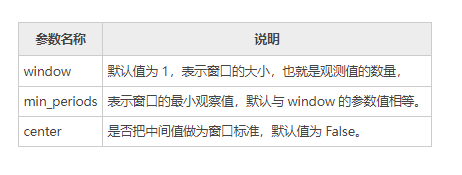
下面看一组示例：
import pandas as pd
import numpy as np
#生成时间序列
df = pd.DataFrame(np.random.randn(8, 4),index = pd.date_range('12/1/2020', periods=8),columns = ['A', 'B', 'C', 'D'])
print(df)
#每3个数求求一次均值
print(df.rolling(window=3).mean())
输出结果：
A B C D
2020-12-01 0.580058 -0.715246 0.440427 -1.106783
2020-12-02 -1.313982 0.068954 -0.906665 1.382941
2020-12-03 0.349844 -0.549509 -0.806577 0.261794
2020-12-04 -0.497054 0.921995 0.232008 -0.815291
2020-12-05 2.658108 0.447783 0.049340 0.329209
2020-12-06 -0.271670 -0.070299 0.860684 -0.095122
2020-12-07 -0.706780 -0.949392 0.679680 0.230930
2020-12-08 0.027379 -0.056543 -1.067625 1.386399
A B C D
2020-12-01 NaN NaN NaN NaN
2020-12-02 NaN NaN NaN NaN
2020-12-03 -0.128027 -0.398600 -0.424272 0.179317
2020-12-04 -0.487064 0.147147 -0.493745 0.276481
2020-12-05 0.836966 0.273423 -0.175076 -0.074763
2020-12-06 0.629794 0.433160 0.380677 -0.193734
2020-12-07 0.559886 -0.190636 0.529901 0.155006
2020-12-08 -0.317024 -0.358745 0.157580 0.507402
window=3表示是每一列中依次紧邻的每 3 个数求一次均值。当不满足 3 个数时，所求值均为 NaN 值，因此前两列的值为 NaN，直到第三行值才满足要求 window =3。求均值的公式如下所示：
2、expanding()¶
expanding() 又叫扩展窗口函数，扩展是指由序列的第一个元素开始，逐个向后计算元素的聚合值。 下面示例， min_periods = n 表示向后移动 n 个值计求一次平均值：
import pandas as pd
import numpy as np
df = pd.DataFrame(np.random.randn(10, 4),
index = pd.date_range('1/1/2018', periods=10),
columns = ['A', 'B', 'C', 'D'])
print (df.expanding(min_periods=3).mean())
输出结果：
A B C D
2020-01-01 NaN NaN NaN NaN
2020-01-02 NaN NaN NaN NaN
2020-01-03 -0.567833 0.258723 0.498782 0.403639
2020-01-04 -0.384198 -0.093490 0.456058 0.459122
2020-01-05 -0.193821 0.085318 0.389533 0.552429
2020-01-06 -0.113941 0.252397 0.214789 0.455281
2020-01-07 0.147863 0.400141 -0.062493 0.565990
2020-01-08 -0.036038 0.452132 -0.091939 0.371364
2020-01-09 -0.043203 0.368912 -0.033141 0.328143
2020-01-10 -0.100571 0.349378 -0.078225 0.225649
设置 min_periods=3，表示至少 3 个数求一次均值，计算方式为 (index0+index1+index2)/3，而 index3 的计算方式是 (index0+index1+index2+index3)/3，依次类推。
3、ewm()¶
ewm（全称 Exponentially Weighted Moving）表示指数加权移动。ewm() 函数先会对序列元素做指数加权运算，其次计算加权后的均值。该函数通过指定 com、span 或者 halflife 参数来实现指数加权移动。示例如下：
import pandas as pd
import numpy as np
df = pd.DataFrame(np.random.randn(10, 4),
index = pd.date_range('12/1/2020', periods=10),
columns = ['A', 'B', 'C', 'D'])
#设置com=0.5，先加权再求均值
print(df.ewm(com=0.5).mean())
输出结果：
A B C D
2020-12-01 -1.511428 1.427826 0.252652 0.093601
2020-12-02 -1.245101 -0.118346 0.170232 -0.207065
2020-12-03 0.131456 -0.271979 -0.679315 -0.589689
2020-12-04 -0.835228 0.094073 -0.973924 -0.081684
2020-12-05 1.279812 1.099368 0.203033 0.019014
2020-12-06 0.132027 -0.625744 -0.145090 -0.318155
2020-12-07 0.820230 0.371620 0.119683 -0.227101
2020-12-08 1.088283 -0.275570 0.358557 -1.050606
2020-12-09 0.538304 -1.288146 0.590358 -0.164057
2020-12-10 0.589177 -1.514472 -0.613158 0.367322
在数据分析的过程中，使用窗口函数能够提升数据的准确性，并且使数据曲线的变化趋势更加平滑，从而让数据分析变得更加准确、可靠。
十七、Python Pandas聚合函数¶
在《Python Pandas窗口函数》一节，我们重点介绍了窗口函数。我们知道，窗口函数可以与聚合函数一起使用，聚合函数指的是对一组数据求总和、最大值、最小值以及平均值的操作，本节重点讲解聚合函数的应用。
1、应用聚合函数¶
首先让我们创建一个 DataFrame 对象，然后对聚合函数进行应用。
import pandas as pd
import numpy as np
df = pd.DataFrame(np.random.randn(5, 4),index = pd.date_range('12/14/2020', periods=5),columns = ['A', 'B', 'C', 'D'])
print (df)
#窗口大小为3，min_periods 最小观测值为1
r = df.rolling(window=3,min_periods=1)
print(r)
输出结果：
A B C D
2020-12-14 0.941621 1.205489 0.473771 -0.348169
2020-12-15 -0.276954 0.076387 0.104194 1.537357
2020-12-16 0.582515 0.481999 -0.652332 -1.893678
2020-12-17 -0.286432 0.923514 0.285255 -0.739378
2020-12-18 2.063422 -0.465873 -0.946809 1.590234
Rolling [window=3,min_periods=1,center=False,axis=0]
1) 对整体聚合
您可以把一个聚合函数传递给 DataFrame，示例如下：
import pandas as pd
import numpy as np
df = pd.DataFrame(np.random.randn(5, 4),index = pd.date_range('12/14/2020', periods=5),columns = ['A', 'B', 'C', 'D'])
print (df)
#窗口大小为3，min_periods 最小观测值为1
r = df.rolling(window=3,min_periods=1)
#使用 aggregate()聚合操作
print(r.aggregate(np.sum))
输出结果：
A B C D
2020-12-14 0.133713 0.746781 0.499385 0.589799
2020-12-15 -0.777572 0.531269 0.600577 -0.393623
2020-12-16 0.408115 -0.874079 0.584320 0.507580
2020-12-17 -1.033055 -1.185399 -0.546567 2.094643
2020-12-18 0.469394 -1.110549 -0.856245 0.260827
A B C D
2020-12-14 0.133713 0.746781 0.499385 0.589799
2020-12-15 -0.643859 1.278050 1.099962 0.196176
2020-12-16 -0.235744 0.403971 1.684281 0.703756
2020-12-17 -1.402513 -1.528209 0.638330 2.208601
2020-12-18 -0.155546 -3.170027 -0.818492 2.863051
2) 对任意某一列聚合
import pandas as pd
import numpy as np
df = pd.DataFrame(np.random.randn(5, 4),index = pd.date_range('12/14/2020', periods=5),columns = ['A', 'B', 'C', 'D'])
#窗口大小为3，min_periods 最小观测值为1
r = df.rolling(window=3,min_periods=1)
#对 A 列聚合
print(r['A'].aggregate(np.sum))
输出结果：
2020-12-14 1.051501
2020-12-15 1.354574
2020-12-16 0.896335
2020-12-17 0.508470
2020-12-18 2.333732
Freq: D, Name: A, dtype: float64
3) 对多列数据聚合
import pandas as pd
import numpy as np
df = pd.DataFrame(np.random.randn(5, 4),index = pd.date_range('12/14/2020', periods=5),columns = ['A', 'B', 'C', 'D'])
#窗口大小为3，min_periods 最小观测值为1
r = df.rolling(window=3,min_periods=1)
#对 A/B 两列聚合
print(r['A','B'].aggregate(np.sum))
输出结果：
A B
2020-12-14 0.639867 -0.229990
2020-12-15 0.352028 0.257918
2020-12-16 0.637845 2.643628
2020-12-17 0.432715 2.428604
2020-12-18 -1.575766 0.969600
4) 对单列应用多个函数
import pandas as pd
import numpy as np
df = pd.DataFrame(np.random.randn(5, 4),index = pd.date_range('12/14/2020', periods=5),columns = ['A', 'B', 'C', 'D'])
#窗口大小为3，min_periods 最小观测值为1
r = df.rolling(window=3,min_periods=1)
#对 A列聚合
print(r['A'].aggregate([np.sum,np.mean]))
输出结果：
sum mean
2020-12-14 -0.469643 -0.469643
2020-12-15 -0.626856 -0.313428
2020-12-16 -1.820226 -0.606742
2020-12-17 -2.007323 -0.669108
2020-12-18 -0.595736 -0.198579
5) 对不同列应用多个函数
import pandas as pd
import numpy as np
df = pd.DataFrame(np.random.randn(5, 4),
index = pd.date_range('12/11/2020', periods=5),
columns = ['A', 'B', 'C', 'D'])
r = df.rolling(window=3,min_periods=1)
print(r['A','B'].aggregate([np.sum,np.mean]))
输出结果：
A B
sum mean sum mean
2020-12-14 -1.428882 -1.428882 -0.417241 -0.417241
2020-12-15 -1.315151 -0.657576 -1.580616 -0.790308
2020-12-16 -2.093907 -0.697969 -2.260181 -0.753394
2020-12-17 -1.324490 -0.441497 -1.578467 -0.526156
2020-12-18 -2.400948 -0.800316 -0.452740 -0.150913
6) 对不同列应用不同函数
import pandas as pd
import numpy as np
df = pd.DataFrame(np.random.randn(3, 4),
index = pd.date_range('12/14/2020', periods=3),
columns = ['A', 'B', 'C', 'D'])
r = df.rolling(window=3,min_periods=1)
print(r.aggregate({'A': np.sum,'B': np.mean}))
输出结果：
十八、Python Pandas缺失值处理¶
在一些数据分析业务中，数据缺失是我们经常遇见的问题，缺失值会导致数据质量的下降，从而影响模型预测的准确性，这对于机器学习和数据挖掘影响尤为严重。因此妥善的处理缺失值能够使模型预测更为准确和有效。
1、为什么会存在缺失值？¶
前面章节的示例中，我们遇到过很多 NaN 值，关于缺失值您可能会有很多疑问，数据为什么会丢失数据呢，又是从什么时候丢失的呢？通过下面场景，您会得到答案。
其实在很多时候，人们往往不愿意过多透露自己的信息。假如您正在对用户的产品体验做调查，在这个过程中您会发现，一些用户很乐意分享自己使用产品的体验，但他是不愿意透露自己的姓名和联系方式；还有一些用户愿意分享他们使用产品的全部经过，包括自己的姓名和联系方式。因此，总有一些数据会因为某些不可抗力的因素丢失，这种情况在现实生活中会经常遇到。
2、什么是稀疏数据？¶
稀疏数据，指的是在数据库或者数据集中存在大量缺失数据或者空值，我们把这样的数据集称为稀疏数据集。稀疏数据不是无效数据，只不过是信息不全而已，只要通过适当的方法就可以“变废为宝”。
- 由于调查不当产生的稀疏数据；
- 由于天然限制产生的稀疏数据；
- 文本挖掘中产生的稀疏数据。
3、缺失值处理¶
那么 Pandas 是如何处理缺失值的呢，下面让我们一起看一下。
import pandas as pd
import numpy as np
df = pd.DataFrame(np.random.randn(5, 3), index=['a', 'c', 'e', 'f','h'])
df = df.reindex(['a', 'b', 'c', 'd', 'e', 'f', 'g', 'h'])
print(df)
输出结果：
0 1 2
a 0.187208 -0.951407 0.316340
b NaN NaN NaN
c -0.365741 -1.983977 -1.052170
d NaN NaN NaN
e -1.024180 1.550515 0.317156
f -0.799921 -0.686590 1.383229
g NaN NaN NaN
h -0.207958 0.426733 -0.325951
上述示例，通过使用 reindex（重构索引），我们创建了一个存在缺少值的 DataFrame 对象。
4、检查缺失值¶
为了使检测缺失值变得更容易，Pandas 提供了 isnull() 和 notnull() 两个函数，它们同时适用于 Series 和 DataFrame 对象。
import pandas as pd
import numpy as np
df = pd.DataFrame(np.random.randn(5, 3), index=['a', 'c', 'e', 'f','h'])
df = df.reindex(['a', 'b', 'c', 'd', 'e', 'f', 'g', 'h'])
print(df.isnull())
输出结果：
0 1 2
a False False False
b True True True
c False False False
d True True True
e False False False
f False False False
g True True True
h False False False
notnull() 函数，使用示例：
import pandas as pd
import numpy as np
df = pd.DataFrame(np.random.randn(5, 3), index=['a', 'c', 'e', 'f','h'])
df = df.reindex(['a', 'b', 'c', 'd', 'e', 'f', 'g', 'h'])
print(df.notnull())
输出结果：
0 1 2
a True True True
b False False False
c True True True
d False False False
e True True True
f True True True
g False False False
h True True True
df.isnull().any() 用来判断某列是否有缺失值
df.isnull().all() 用来判断某列是否全部为空值
5、缺失数据计算¶
计算缺失数据时，需要注意两点：首先数据求和时，将 NA 值视为 0 ，其次，如果要计算的数据为 NA，那么结果就是 NA。示例如下：
import pandas as pd
import numpy as np
df = pd.DataFrame(np.random.randn(5, 3), index=['a', 'c', 'e', 'f','h'],columns=['one', 'two', 'three'])
df = df.reindex(['a', 'b', 'c', 'd', 'e', 'f', 'g', 'h'])
print (df['one'].sum())
输出结果：
6、清理并填充缺失值¶
Pandas 提供了多种方法来清除缺失值。fillna() 函数可以实现用非空数据“填充”NaN 值。
1) 用标量值替换NaN值
下列程序将 NaN 值 替换为了 0，如下所示：
import pandas as pd
import numpy as np
df = pd.DataFrame(np.random.randn(3, 3), index=['a', 'c', 'e'],columns=['one',
'two', 'three'])
df = df.reindex(['a', 'b', 'c'])
print(df)
#用 0 填充 NaN
print (df.fillna(0))
输出结果：
one two three
a 1.497185 -0.703897 -0.050513
b NaN NaN NaN
c 2.008315 1.342690 -0.255855
one two three
a 1.497185 -0.703897 -0.050513
b 0.000000 0.000000 0.000000
c 2.008315 1.342690 -0.255855
当然根据您自己的需求，您也可以用其他值进行填充。
使用均值填充
df = pd.DataFrame(np.random.randn(3, 3), index=['a', 'c', 'e'],columns=['one',
'two', 'three'])
df = df.reindex(['a', 'b', 'c'])
print(df)
print('-------分割线--------')
#使用每列的均值填充
for col in df.columns:
df[col].fillna(df[col].mean(),inplace=True)
print(df)
one two three
a 0.771181 -0.013223 -1.199376
b NaN NaN NaN
c 1.106132 -1.149741 -0.688117
-----------分割线------------
one two three
a 0.771181 -0.013223 -1.199376
b 0.938657 -0.581482 -0.943747
c 1.106132 -1.149741 -0.688117
2) 向前和向后填充NA
在《Pandas reindex重建索引 》一节，我们介绍了 ffill() 向前填充和 bfill() 向后填充，使用这两个函数也可以处理 NA 值。示例如下：
import pandas as pd
import numpy as np
df = pd.DataFrame(np.random.randn(5, 3), index=['a', 'c', 'e', 'f','h'],columns=['one', 'two', 'three'])
df = df.reindex(['a', 'b', 'c', 'd', 'e', 'f', 'g', 'h'])
print df.fillna(method='ffill')
输出结果：
one two three
a 0.871741 0.311057 0.091005
b 0.871741 0.311057 0.091005
c 0.107345 -0.662864 0.826716
d 0.107345 -0.662864 0.826716
e 1.630221 0.482504 -0.728767
f 1.283206 -0.145178 0.109155
g 1.283206 -0.145178 0.109155
h 0.222176 0.886768 0.347820
或者您也可以采用向后填充的方法。
3) 使用replace替换通用值
在某些情况下，您需要使用 replace() 将 DataFrame 中的通用值替换成特定值，这和使用 fillna() 函数替换 NaN 值是类似的。示例如下：
import pandas as pd
import numpy as np
df = pd.DataFrame({'one':[10,20,30,40,50,666], 'two':[99,0,30,40,50,60]})
#使用replace()方法
print (df.replace({99:10,666:60,0:20}))
输出结果：
7、删除缺失值¶
如果想删除缺失值，那么使用 dropna() 函数与参数 axis 可以实现。在默认情况下，按照 axis=0 来按行处理，这意味着如果某一行中存在 NaN 值将会删除整行数据。示例如下：
import pandas as pd
import numpy as np
df = pd.DataFrame(np.random.randn(5, 3), index=['a', 'c', 'e', 'f','h'],columns=['one', 'two', 'three'])
df = df.reindex(['a', 'b', 'c', 'd', 'e', 'f', 'g', 'h'])
print(df)
#删除缺失值
print (df.dropna())
输出结果：
one two three
a -2.025435 0.617616 0.862096
b NaN NaN NaN
c -1.710705 1.780539 -2.313227
d NaN NaN NaN
e -2.347188 -0.498857 -1.070605
f -0.159588 1.205773 -0.046752
g NaN NaN NaN
h -0.549372 -1.740350 0.444356
one two three
a -2.025435 0.617616 0.862096
c -1.710705 1.780539 -2.313227
e -2.347188 -0.498857 -1.070605
f -0.159588 1.205773 -0.046752
h -0.549372 -1.740350 0.444356
axis = 1 表示按列处理，处理结果是一个空的 DataFrame 对象。
十九、Pandas groupby分组操作详解¶
在数据分析中，经常会遇到这样的情况：根据某一列（或多列）标签把数据划分为不同的组别，然后再对其进行数据分析。比如，某网站对注册用户的性别或者年龄等进行分组，从而研究出网站用户的画像（特点）。在 Pandas 中，要完成数据的分组操作，需要使用 groupby() 函数，它和 SQL 的GROUP BY操作非常相似。
在划分出来的组（group）上应用一些统计函数，从而达到数据分析的目的，比如对分组数据进行聚合、转换，或者过滤。这个过程主要包含以下三步：
- 拆分（Spliting）：表示对数据进行分组；
- 应用（Applying）：对分组数据应用聚合函数，进行相应计算；
- 合并（Combining）：最后汇总计算结果。
下面对 groupby() 函数的应用过程进行具体的讲解。
1、创建DataFrame对象¶
首先我们创建一个 DataFrame 对象，下面数据描述了某班学生，计算机选修课的考试成绩：
import pandas as pd
import numpy as np
data = {'Name': ['John', 'Helen', 'Sona', 'Ella'],
'score': [82, 98, 91, 87],
'option_course': ['C#','Python','Java','C']}
df = pd.DataFrame(data)
print(df)
输出结果：
2、创建groupby分组对象¶
使用 groupby() 可以沿着任意轴分组。您可以把分组时指定的键（key）作为每组的组名，方法如下所示：
- df.groupby("key")
- df.groupby("key",axis=1)
- df.groupby(["key1","key2"])
通过上述方法对 DataFrame 对象进行分组操作：
import pandas as pd
import numpy as np
data = {'Name': ['John', 'Helen', 'Sona', 'Ella'],
'score': [82, 98, 91, 87],
'option_course': ['C#','Python','Java','C']}
df = pd.DataFrame(data)
print(df)
#生成分组groupby对象
print(df.groupby('score'))
输出结果：
3、查看分组结果¶
1) groups查看分组结果
通过调用groups 属性查看分组结果：
import pandas as pd
import numpy as np
data = {'Name': ['John', 'Helen', 'Sona', 'Ella','Tom'],
'score': [82, 98, 91, 87,82],
'option_course': ['C#','Python','Java','C','js']}
df = pd.DataFrame(data)
#查看分组
print(df.groupby('score').groups)
输出结果：
{82: Int64Index([0], dtype='int64'),
87: Int64Index([3], dtype='int64'),
91: Int64Index([2], dtype='int64'),
98: Int64Index([1], dtype='int64')}
2) 多个列标签分组
当然也可以指定多个列标签进行分组，示例如下：
import pandas as pd
import numpy as np
data = {'Name': ['John', 'Helen', 'Sona', 'Ella'],
'score': [82, 98, 91, 87],
'option_course': ['C#','Python','Java','C']}
df = pd.DataFrame(data)
#查看分组
print(df.groupby(['Name','score']).groups)
输出结果：
{('Ella', 87): Int64Index([3], dtype='int64'),
('Helen', 98): Int64Index([1], dtype='int64'),
('John', 82): Int64Index([0], dtype='int64'),
('Sona', 91): Int64Index([2], dtype='int64')}
通过 get_group() 方法可以选择组内的具体数据项：
import pandas as pd
import numpy as np
data = {'Name': ['John', 'Helen', 'Sona', 'Ella'],
'score': [82, 98, 91, 87],
'option_course': ['C#','Python','Java','C']}
df = pd.DataFrame(data)
#根据score来分组
grouped=df.groupby('score')
#根据对应组的数据值，选择一个组
print(grouped.get_group(91))
输出结果：
4、遍历分组数据¶
通过以下方法来遍历分组数据，示例如下：
import pandas as pd
import numpy as np
data = {'Name': ['John', 'Helen', 'Sona', 'Ella'],
'score': [82, 98, 91, 87],
'option_course': ['C#','Python','Java','C']}
df = pd.DataFrame(data)
#查看分组
grouped=df.groupby('score')
for label, option_course in grouped:
#其中key代表分组后字典的键，也就是score
print(label)
#字典对应的值选修的科目
print(option_course)
输出结果：
82
Name score option_course
0 John 82 C#
87
Name score option_course
3 Ella 87 C
91
Name score option_course
2 Sona 91 Java
98
Name score option_course
1 Helen 98 Python
如上所示， groupby 对象的组名称与 score 中的的元素值一一对应。
5、应用聚合函数¶
当您在创建 groupby 对象时，通过 agg() 函数可以对分组对象应用多个聚合函数：
import pandas as pd
import numpy as np
data = {'name': ['John', 'Helen', 'Sona', 'Ella'],
'score': [82, 98, 91, 87],
'option_course': ['C#','Python','Java','C']}
df = pd.DataFrame(data)
grouped=df.groupby('name')
#应用一个聚合函数求均值
print(grouped['score']).agg(np.mean)
输出结果：
当然，您也可以一次性应有多个聚合函数，示例如下：
import pandas as pd
import numpy as np
data = {'name': ['John', 'Helen', 'Sona', 'Ella'],
'score': [82, 98, 91, 87],
'option_course': ['C#','Python','Java','C']}
df = pd.DataFrame(data)
grouped=df.groupby('name')
print(grouped['score'].agg([np.size,np.mean,np.std]))
输出结果：
6、组的转换操作（略）¶
在组的行或列上可以执行转换操作，最终会返回一个与组大小相同的索引对象。
dataframe.agg():只做聚合操作， 可同时运用多个聚合函数，或为各列分配不同的聚合函数 dataframe.apply() 作用对象是dataframe， 跟自定义函数，包括简单的求和函数以及复杂series间的交互函数，不能直接使用agg（）函数和python内置函数，例如sum、max、min、'count‘等方法 dataframe.transform（）对dataframe的每个series做transform操作，返回的结构与原dataframe一致 不能跟自定义的series间交互函数
示例如下：
import pandas as pd
import numpy as np
df = pd.DataFrame({'种类':['水果','水果','水果','蔬菜','蔬菜','肉类','肉类'],
'产地':['朝鲜','中国','缅甸','中国','菲律宾','韩国','中国'],
'水果':['橘子','苹果','哈密瓜','番茄','椰子','鱼肉','牛肉'],
'数量':[3,5,5,3,2,15,9],
'价格':[2,5,12,3,4,18,20]})
#分组求均值，水果、蔬菜、肉类
#对可执行计算的数值列求均值
print(df.groupby('种类').transform(np.mean))
#transform()直接应用demean，实现去均值操作
demean = lambda arr:arr-arr.mean()
print(df.groupby('种类').transform(demean))
#自定义函数
# 返回分组的前n行数据
def get_rows(df,n):
#从1到n行的所有列
return df.iloc[:n,:]
#分组后的组名作为行索引
print(df.groupby('种类').apply(get_rows,n=1))
输出结果：
数量 价格
0 4.333333 6.333333
1 4.333333 6.333333
2 4.333333 6.333333
3 2.500000 3.500000
4 2.500000 3.500000
5 12.000000 19.000000
6 12.000000 19.000000
数量 价格
0 -1.333333 -4.333333
1 0.666667 -1.333333
2 0.666667 5.666667
3 0.500000 -0.500000
4 -0.500000 0.500000
5 3.000000 -1.000000
6 -3.000000 1.000000
种类 产地 水果 数量 价格
种类
水果 0 水果 朝鲜 橘子 3 2
肉类 5 肉类 韩国 鱼肉 15 18
蔬菜 3 蔬菜 中国 番茄 3 3
7、组的数据过滤操作（略）¶
通过 filter() 函数可以实现数据的筛选，该函数根据定义的条件过滤数据并返回一个新的数据集。 下面，筛选出参加比赛超过两次的球队（包含两次）：
import pandas as pd
import numpy as np
data = {'Team': ['Riders', 'Riders', 'Devils', 'Devils', 'Kings',
'kings', 'Kings', 'Kings', 'Riders', 'Royals', 'Royals', 'Riders'],
'Rank': [1, 2, 2, 3, 3,4 ,1 ,1,2 , 4,1,2],
'Year': [2014,2015,2014,2015,2014,2015,2016,2017,2016,2014,2015,2017],
'Points':[874,789,863,663,741,802,756,788,694,701,812,698]}
df = pd.DataFrame(data)
#定义lambda函数来筛选数据
print(df.groupby('Team').filter(lambda x: len(x) >= 2))
输出结果：
Team Rank Year Points
0 Riders 1 2014 874
1 Riders 2 2015 789
4 Kings 3 2014 741
6 Kings 1 2016 756
7 Kings 1 2017 788
8 Riders 2 2016 694
11 Riders 2 2017 698
二十、Pandas merge合并操作¶
Pandas 提供的 merge() 函数能够进行高效的合并操作，这与 SQL 关系型数据库的 MERGE 用法非常相似。从字面意思上不难理解，merge 翻译为“合并”，指的是将两个 DataFrame 数据表按照指定的规则进行连接，最后拼接成一个新的 DataFrame 数据表。
merge() 函数的法格式如下：
pd.merge(left, right, how='inner', on=None, left_on=None, right_on=None,left_index=False, right_index=False, sort=True,suffixes=('_x', '_y'), copy=True)
参数说明，如下表所示：
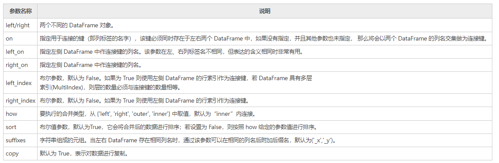
注意：Pandas 库的 merge() 支持各种内外连接，与其相似的还有 join() 函数（默认为左连接）。
下面创建两个不同的 DataFrame，然后对它们进行合并操作：
import pandas as pd
left = pd.DataFrame({
'id':[1,2,3,4],
'Name': ['Smith', 'Maiki', 'Hunter', 'Hilen'],
'subject_id':['sub1','sub2','sub4','sub6']})
right = pd.DataFrame({
'id':[1,2,3,4],
'Name': ['William', 'Albert', 'Tony', 'Allen'],
'subject_id':['sub2','sub4','sub3','sub6']})
print (left)
print (right)
输出如下：
id Name subject_id
0 1 Smith sub1
1 2 Maiki sub2
2 3 Hunter sub4
3 4 Hilen sub6
id Name subject_id
0 1 William sub2
1 2 Albert sub4
2 3 Tony sub3
3 4 Allen sub6
1) 在单个键上进行合并操作
通过 on 参数指定一个连接键，然后对上述 DataFrame 进行合并操作：
import pandas as pd
left = pd.DataFrame({
'id':[1,2,3,4],
'Name': ['Smith', 'Maiki', 'Hunter', 'Hilen'],
'subject_id':['sub1','sub2','sub4','sub6']})
right = pd.DataFrame({
'id':[1,2,3,4],
'Name': ['William', 'Albert', 'Tony', 'Allen'],
'subject_id':['sub2','sub4','sub3','sub6']})
#通过on参数指定合并的键
print(pd.merge(left,right,on='id'))
输出结果：
id Name_x subject_id_x Name_y subject_id_y
0 1 Smith sub1 William sub2
1 2 Maiki sub2 Albert sub4
2 3 Hunter sub4 Tony sub3
3 4 Hilen sub6 Allen sub6
2) 在多个键上进行合并操作
下面示例，指定多个键来合并上述两个 DataFrame 对象：
import pandas as pd
left = pd.DataFrame({
'id':[1,2,3,4],
'Name': ['Smith', 'Maiki', 'Hunter', 'Hilen'],
'subject_id':['sub1','sub2','sub4','sub6']})
right = pd.DataFrame({
'id':[1,2,3,4],
'Name': ['Bill', 'Lucy', 'Jack', 'Mike'],
'subject_id':['sub2','sub4','sub3','sub6']})
print(pd.merge(left,right,on=['id','subject_id']))
输出结果：
1)、使用how参数合并¶
通过how 参数可以确定 DataFrame 中要包含哪些键，如果在左表、右表都不存的键，那么合并后该键对应的值为 NaN。为了便于大家学习，我们将 how 参数和与其等价的 SQL 语句做了总结：
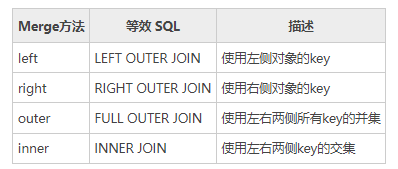
1) left join
import pandas as pd
left = pd.DataFrame({
'id':[1,2,3,4],
'Name': ['Smith', 'Maiki', 'Hunter', 'Hilen'],
'subject_id':['sub1','sub2','sub4','sub6']})
right = pd.DataFrame({
'id':[1,2,3,4],
'Name': ['Bill', 'Lucy', 'Jack', 'Mike'],
'subject_id':['sub2','sub4','sub3','sub6']})
#以left侧的subject_id为键
print(pd.merge(left,right,on='subject_id',how="left"))
输出结果：
id_x Name_x subject_id id_y Name_y
0 1 Smith sub1 NaN NaN
1 2 Maiki sub2 1.0 Bill
2 3 Hunter sub4 2.0 Lucy
3 4 Hilen sub6 4.0 Mike
2) right join¶
import pandas as pd
left = pd.DataFrame({
'id':[1,2,3,4],
'Name': ['Smith', 'Maiki', 'Hunter', 'Hilen'],
'subject_id':['sub1','sub2','sub4','sub6']})
right = pd.DataFrame({
'id':[1,2,3,4],
'Name': ['Bill', 'Lucy', 'Jack', 'Mike'],
'subject_id':['sub2','sub4','sub3','sub6']})
#以right侧的subject_id为键
print(pd.merge(left,right,on='subject_id',how="right"))
输出结果：
id_x Name_x subject_id id_y Name_y
0 2.0 Maiki sub2 1 Bill
1 3.0 Hunter sub4 2 Lucy
2 4.0 Hilen sub6 4 Mike
3 NaN NaN sub3 3 Jack
3) outer join(并集)¶
import pandas as pd
left = pd.DataFrame({
'id':[1,2,3,4],
'Name': ['Smith', 'Maiki', 'Hunter', 'Hilen'],
'subject_id':['sub1','sub2','sub4','sub6']})
right = pd.DataFrame({
'id':[1,2,3,4],
'Name': ['Bill', 'Lucy', 'Jack', 'Mike'],
'subject_id':['sub2','sub4','sub3','sub6']})
#求出两个subject_id的并集，并作为键
print(pd.merge(left,right,on='subject_id',how="outer"))
输出结果：
id_x Name_x subject_id id_y Name_y
0 1.0 Smith sub1 NaN NaN
1 2.0 Maiki sub2 1.0 Bill
2 3.0 Hunter sub4 2.0 Lucy
3 4.0 Hilen sub6 4.0 Mike
4 NaN NaN sub3 3.0 Jack
4) inner join(交集)¶
import pandas as pd
left = pd.DataFrame({
'id':[1,2,3,4],
'Name': ['Smith', 'Maiki', 'Hunter', 'Hilen'],
'subject_id':['sub1','sub2','sub4','sub6']})
right = pd.DataFrame({
'id':[1,2,3,4],
'Name': ['Bill', 'Lucy', 'Jack', 'Mike'],
'subject_id':['sub2','sub4','sub3','sub6']})
#求出两个subject_id的交集，并将结果作为键
print(pd.merge(left,right,on='subject_id',how="inner"))
输出结果：
id_x Name_x subject_id id_y Name_y
0 2 Maiki sub2 1 Bill
1 3 Hunter sub4 2 Lucy
2 4 Hilen sub6 4 Mike
二十一、Pandas concat连接操作¶
Pandas 通过 concat() 函数能够轻松地将 Series 与 DataFrame 对象组合在一起，函数的语法格式如下：
参数说明如下所示：
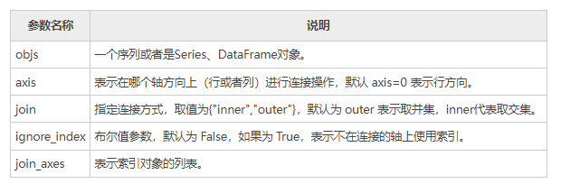
1、concat()¶
concat() 函数用于沿某个特定的轴执行连接操作。下面让我们创建不同的对象，并对其进行连接。
import pandas as pd
a= pd.DataFrame({'A': ['A0', 'A1', 'A2', 'A3'],
'B': ['B0', 'B1', 'B2', 'B3'],
'C': ['C0', 'C1', 'C2', 'C3'],
'D': ['D0', 'D1', 'D2', 'D3']},
index=[0, 1, 2, 3])
b= pd.DataFrame({'A': ['A4', 'A5', 'A6', 'A7'],
'B': ['B4', 'B5', 'B6', 'B7'],
'C': ['C4', 'C5', 'C6', 'C7'],
'D': ['D4', 'D5', 'D6', 'D7']})
#连接a与b
print(pd.concat([a,b]))
输出结果：
A B C D
0 A0 B0 C0 D0
1 A1 B1 C1 D1
2 A2 B2 C2 D2
3 A3 B3 C3 D3
4 A4 B4 C4 D4
5 A5 B5 C5 D5
6 A6 B6 C6 D6
7 A7 B7 C7 D7
如果想把指定的键与 DataFrame 对象连接，您可以使用 keys 参数来实现。如下所示：
import pandas as pd
a= pd.DataFrame({'A': ['A0', 'A1', 'A2', 'A3'],
'B': ['B0', 'B1', 'B2', 'B3'],
'C': ['C0', 'C1', 'C2', 'C3'],
'D': ['D0', 'D1', 'D2', 'D3']},
index=[0, 1, 2, 3])
b= pd.DataFrame({'A': ['A4', 'A5', 'A6', 'A7'],
'B': ['B4', 'B5', 'B6', 'B7'],
'C': ['C4', 'C5', 'C6', 'C7'],
'D': ['D1', 'D2', 'D5', 'D6']},
index=[2,3,4,5])
#连接a与b,并给a，b连接一个指定的键
print(pd.concat([a,b],keys=['x','y']))
输出结果：
A B C D
x 0 A0 B0 C0 D0
1 A1 B1 C1 D1
2 A2 B2 C2 D2
3 A3 B3 C3 D3
y 2 A4 B4 C4 D1
3 A5 B5 C5 D2
4 A6 B6 C6 D5
5 A7 B7 C7 D6
上述示中，可以看出行索引 index 存在重复使用的现象，如果想让输出的行索引遵循依次递增的规则，那么需要将 ignore_index 设置为 True。
import pandas as pd
a= pd.DataFrame({'A': ['A0', 'A1', 'A2', 'A3'],
'B': ['B0', 'B1', 'B2', 'B3'],
'C': ['C0', 'C1', 'C2', 'C3'],
'D': ['D0', 'D1', 'D2', 'D3']},
index=[0, 1, 2, 3])
b= pd.DataFrame({'A': ['A4', 'A5', 'A6', 'A7'],
'B': ['B4', 'B5', 'B6', 'B7'],
'C': ['C4', 'C5', 'C6', 'C7'],
'D': ['D1', 'D2', 'D5', 'D6']},
index=[2,3,4,5])
#连接a与b,设置 ignore_index 等于 True
print(pd.concat([a,b],keys=['x','y'],ignore_index=True))
输出结果：
A B C D
0 A0 B0 C0 D0
1 A1 B1 C1 D1
2 A2 B2 C2 D2
3 A3 B3 C3 D3
4 A4 B4 C4 D1
5 A5 B5 C5 D2
6 A6 B6 C6 D5
7 A7 B7 C7 D6
注意：此时的索引顺序被改变了，而且键 keys 指定的键也被覆盖了。
如果您想要沿着 axis=1 添加两个对象，那么将会追加新的列。
import pandas as pd
a= pd.DataFrame({'A': ['A0', 'A1', 'A2', 'A3'],
'B': ['B0', 'B1', 'B2', 'B3'],
'C': ['C0', 'C1', 'C2', 'C3'],
'D': ['D0', 'D1', 'D2', 'D3']},
index=[0, 1, 2, 3])
b= pd.DataFrame({'A': ['A4', 'A5', 'A6', 'A7'],
'B': ['B4', 'B5', 'B6', 'B7'],
'C': ['C4', 'C5', 'C6', 'C7'],
'D': ['D1', 'D2', 'D5', 'D6']},
index=[4,5,6,7])
#沿着 axis=1，连接a与b
print(pd.concat([a,b],axis=1))
输出结果：
A B C D A B C D
0 A0 B0 C0 D0 NaN NaN NaN NaN
1 A1 B1 C1 D1 NaN NaN NaN NaN
2 A2 B2 C2 D2 NaN NaN NaN NaN
3 A3 B3 C3 D3 NaN NaN NaN NaN
4 NaN NaN NaN NaN A4 B4 C4 D1
5 NaN NaN NaN NaN A5 B5 C5 D2
6 NaN NaN NaN NaN A6 B6 C6 D5
7 NaN NaN NaN NaN A7 B7 C7 D6
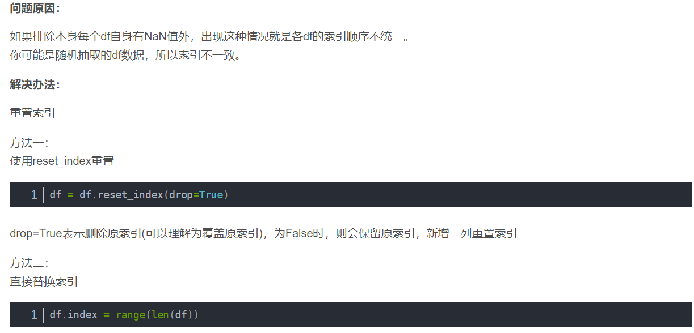
2、append()¶
如果要连接 Series 和 DataFrame 对象，有一个最方便、快捷的方法，那就是 append() 方法。该方法沿着 axis=0 （行方向）进行操作。
import pandas as pd
a= pd.DataFrame({'A': ['A0', 'A1', 'A2', 'A3'],
'B': ['B0', 'B1', 'B2', 'B3'],
'C': ['C0', 'C1', 'C2', 'C3'],
'D': ['D0', 'D1', 'D2', 'D3']},
index=[0, 1, 2, 3])
b= pd.DataFrame({'A': ['A4', 'A5', 'A6', 'A7'],
'B': ['B4', 'B5', 'B6', 'B7'],
'C': ['C4', 'C5', 'C6', 'C7'],
'D': ['D1', 'D2', 'D5', 'D6']},
index=[4,5,6,7])
#沿着 axis=0，使用 apppend()方法连接a与b
print(a.append(b))
输出结果：
A B C D
0 A0 B0 C0 D0
1 A1 B1 C1 D1
2 A2 B2 C2 D2
3 A3 B3 C3 D3
4 A4 B4 C4 D1
5 A5 B5 C5 D2
6 A6 B6 C6 D5
7 A7 B7 C7 D6
当然 append() 函数也可接收多个对象，示例如下：
a= pd.DataFrame({'A': ['A0', 'A1', 'A2', 'A3'],
'B': ['B0', 'B1', 'B2', 'B3'],
'C': ['C0', 'C1', 'C2', 'C3'],
'D': ['D0', 'D1', 'D2', 'D3']},
index=[0, 1, 2, 3])
b= pd.DataFrame({'A': ['A4', 'A5', 'A6', 'A7'],
'B': ['B4', 'B5', 'B6', 'B7'],
'C': ['C4', 'C5', 'C6', 'C7'],
'D': ['D1', 'D2', 'D5', 'D6']},
index=[4,5,6,7])
c= pd.DataFrame({'A': ['A4', 'A5', 'A6', 'A7'],
'B': ['B8', 'B9', 'B10', 'B7'],
'C': ['C9', 'C8', 'C7', 'C6'],
'D': ['D8', 'D5', 'D7', 'D6']},
index=[8,9,10,11])
print(a.append(b,c,a))
输出结果：
A B C D
0 A0 B0 C0 D0
1 A1 B1 C1 D1
2 A2 B2 C2 D2
3 A3 B3 C3 D3
4 A4 B4 C4 D1
5 A5 B5 C5 D2
6 A6 B6 C6 D5
7 A7 B7 C7 D6
8 A4 B8 C9 D8
9 A5 B9 C8 D5
10 A6 B10 C7 D7
11 A7 B7 C6 D6
0 A0 B0 C0 D0
1 A1 B1 C1 D1
2 A2 B2 C2 D2
3 A3 B3 C3 D3
二十二、Python Pandas时间序列详解¶
顾名思义，时间序列（time series），就是由时间构成的序列，它指的是在一定时间内按照时间顺序测量的某个变量的取值序列，比如一天内的温度会随时间而发生变化，或者股票的价格会随着时间不断的波动，这里用到的一系列时间，就可以看做时间序列。时间序列包含三种应用场景，分别是：
- 特定的时刻（timestamp），也就是时间戳；
- 固定的日期（period），比如某年某月某日；
- 时间间隔（interval），每隔一段时间具有规律性；
在处理时间序列的过程中，我们一般会遇到两个问题，第一，如何创建时间序列；第二，如何更改已生成时间序列的频率。 Pandas 为解决上述问题提供了一套简单、易用的方法。
下面用 Python 内置的 datetime 模块来获取当前时间，通过该模块提供的now() 方法即可实现。
输出结果：
1、创建时间戳¶
TimeStamp（时间戳） 是时间序列中的最基本的数据类型，它将数值与时间点完美结合在一起。Pandas 使用下列方法创建时间戳：
输出结果：
同样，可以将整型或浮点型表示的时间转换为时间戳。默认的单位是纳秒(时间戳单位)，示例如下：
输出结果：
2、创建时间范围¶
通过 date_range() 方法可以创建某段连续的时间或者固定间隔的时间时间段。该函数提供了三个参数，分别是：
- start：开始时间
- end：结束时间
- freq：时间频率，默认为 "D"（天）
示例如下：
import pandas as pd
#freq表示时间频率，每30min变化一次
print(pd.date_range("9:00", "18:10", freq="30min").time)
pd.date_range('2022-10-1','2022-12-31',freq='B')
输出结果：
[datetime.time(9, 0) datetime.time(9, 30) datetime.time(10, 0)
datetime.time(10, 30) datetime.time(11, 0) datetime.time(11, 30)
datetime.time(12, 0) datetime.time(12, 30) datetime.time(13, 0)
datetime.time(13, 30) datetime.time(14, 0) datetime.time(14, 30)
datetime.time(15, 0) datetime.time(15, 30) datetime.time(16, 0)
datetime.time(16, 30) datetime.time(17, 0) datetime.time(17, 30)
datetime.time(18, 0)]
3、更改时间频率¶
输出结果：
[datetime.time(6, 10) datetime.time(7, 10) datetime.time(8, 10)
datetime.time(9, 10) datetime.time(10, 10) datetime.time(11, 10)]
4、转化为时间戳（略）¶
您可以使用 to_datetime() 函数将 series 或 list 转换为日期对象，其中 list 会转换为DatetimeIndex 。示例如下：
输出结果：
注意：NaT 表示的不是时间 ，它等效于 NaN。
最后再来看一个示例：
import pandas as pd
#传入list，生成Datetimeindex
print(pd.to_datetime(['Jun 31, 2020','2020-12-10', None]))
输出结果：
5、频率和周期转换(略)¶
Time Periods 表示时间跨度，一段时间周期，它被定义在 Pandas Periods 类中，通过该类提供的方法可以实现将频率转换为周期。比如 Periods() 方法，可以将频率 "M"（月）转换为 Period（时间段）。 下面示例，使用 asfreq() 和 start 参数，打印 "01" ，若使用 end 参数，则打印 "31"。示例如下：
import pandas as pd
x = pd.Period('2014', freq='M')
#start参数
x.asfreq('D', 'start')
#end参数
x.asfreq('D', 'end')
输出结果:
对于常用的时间序列频率，Pandas 为其规定了一些字符串别名，我们将这些别名称为“offset（偏移量）”。如下表所示：
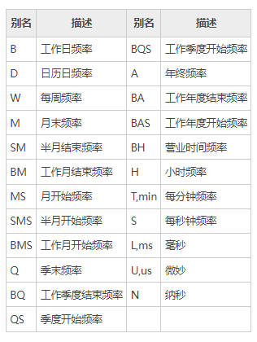
6、时间周期计算¶
周期计算，指的是对时间周期进行算术运算，所有的操作将在“频率”的基础上执行。
输出结果：
执行计算示例：
输出结果：
再看一组完整的示例：
#定义时期period，默认freq="Y"年份
p1=pd.Period('2020')
p2=pd.Period('2019')
#使用f''格式化输出
print(f'p1={p1}年')
print(f'p2={p2}年')
print(f'p1和p2间隔{p1-p2}年')
#f''表示字符串格式化输出
print(f'五年前是{p1-5}年')
输出结果：
7、创建时间周期（略）¶
我们可以使用 period_range() 方法来创建时间周期范围。示例如下：
输出结果：
8、时间序列转换（略）¶
如果想要把字符串日期转换为 Period，首先需要将字符串转换为日期格式，然后再将日期转换为 Period。示例如下：
# 创建时间序列
index=pd.date_range("2020-03-17","2020-03-30",freq="1.5H")
#随机选取4个互不相同的数
loc=np.random.choice(np.arange(len(index)),size=4,replace=False)
loc.sort()
ts_index=index[loc]
ts_index
pd_index=ts_index.to_periods('D')
pd_index()
输出结果：
DatetimeIndex(['2020-03-17 12:00:00', '2020-03-22 04:30:00',
'2020-03-27 03:00:00', '2020-03-30 00:00:00'],
dtype='datetime64[ns]', freq=None)
PeriodIndex(['2020-03-17', '2020-03-19', '2020-03-19', '2020-03-27'], dtype='period[D]', freq='D')
使用 to_timestamp() 能够将 Period 时期转换为时间戳（timestamp），示例如下：
输出结果：
9、创建日期范围¶
Pandas 提供了用来创建日期序列的函数 date_range()，该函数的默认频率为 "D"， 也就是“天”。日期序列只包含年、月、日，不包含时、分、秒。 下面是一组简单的示例，如下所示：
输出结果：
DatetimeIndex(['2020-12-15', '2020-12-16', '2020-12-17', '2020-12-18',
'2020-12-19', '2020-12-20', '2020-12-21', '2020-12-22',
'2020-12-23', '2020-12-24'],
dtype='datetime64[ns]', freq='D')
当我们使用 date_range() 来创建日期范围时，该函数包含结束的日期，用数学术语来说就是区间左闭右闭，即包含起始值，也包含结束值。示例如下：
import pandas as pd
#建议使用Python的datetime模块创建时间
start = pd.datetime(2019, 1, 1)
end = pd.datetime(2019, 1, 5)
print(pd.date_range(start,end))
输出结果：
DatetimeIndex(['2019-01-01', '2019-01-02', '2019-01-03', '2019-01-04','2019-01-05']
,dtype='datetime64[ns]', freq='D')
10、更改日频率¶
使用下列方法可以修改频率，比如按“天”为按“月”，示例如下：
输出结果：
DatetimeIndex(['2020-12-31', '2021-01-31', '2021-02-28', '2021-03-31',
'2021-04-30'],dtype='datetime64[ns]', freq='M')
11、工作日时间¶
bdate_range() 表示创建工作日的日期范围，它与 date_range() 不同，它不包括周六、周日。
输出结果：
DatetimeIndex(['2020-11-25', '2020-11-26', '2020-11-27', '2020-11-28','2020-11-29', '2020-11-30', '2020-12-01', '2020-12-02'],dtype='datetime64[ns]', freq='D')
上述方法中，date_range() 默认频率是日历日，而 bdate_range() 的默认频率是工作日。
二十三、Pandas日期时间格式化¶
当进行数据分析时，我们会遇到很多带有日期、时间格式的数据集，在处理这些数据集时，可能会遇到日期格式不统一的问题，此时就需要对日期时间做统一的格式化处理。比如“Wednesday, June 6, 2020”可以写成“6/6/20”，或者写成“06-06-2020。
1、日期格式化符号¶
在对时间进行格式化处理时，它们都有固定的表示格式，比如小时的格式化符号为%H ,分钟简写为%M ，秒简写为%S。下表对常用的日期格式化符号做了总结：
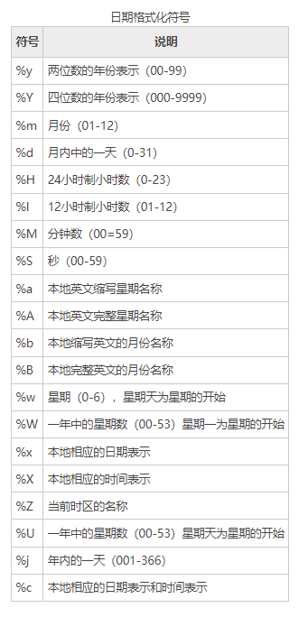
2、Python处理¶
Python 内置的 strptime() 方法能够将字符串日期转换为 datetime 类型，下面看一组示例：
from datetime import datetime
#将日期定义为字符串
date_str1 = 'Wednesday,July18,2020'
date_str2 = '18/7/20'
date_str3 = '18-07-2020'
#将日期转化为datetime对象
dmy_dt1 = datetime.strptime(date_str1, '%A,%B%d,%Y')
dmy_dt2 = datetime.strptime(date_str2, '%d/%m/%y')
dmy_dt3 = datetime.strptime(date_str3, '%d-%m-%Y')
#处理为相同格式，并打印输出
print(dmy_dt1)
print(dmy_dt2)
print(dmy_dt3)
输出结果：
注意：strftime() 可以将 datetime 类型转换为字符串类型，恰好与 strptime() 相反。
3、Pandas处理¶
除了使用 Python 内置的 strptime() 方法外，你还可以使用 Pandas 模块的 pd.to_datetime() 和 pd.DatetimeIndex() 进行转换。
1) to_datetime()
通过 to_datetime() 直接转换为 datetime 类型
import pandas as pd
import numpy as np
date = ['2012-05-06 11:00:00','2012-05-16 11:00:00']
pd_date=pd.to_datetime(date)
df=pd.Series(np.random.randn(2),index=pd_date)
输出结果：
2) DatetimeIndex()
使用 Datetimeindex() 函数设置时间序，示例如下：
date = pd.DatetimeIndex(['1/1/2008', '1/2/2008', '1/3/2008', '1/4/2008', '1/5/2008'])
dt = pd.Series(np.random.randn(5),index = date)
print(dt)
输出结果：
2008-01-01 1.965619
2008-01-02 -2.897374
2008-01-03 0.625929
2008-01-04 1.204926
2008-01-05 1.755680
dtype: float64
二十四、Padans Timedelta时间差(略)¶
Timedelta 表示时间差（或者时间增量），我们可以使用不同的时间单位来表示它，比如，天、小时、分、秒。时间差的最终的结果可以是正时间差，也可以是负时间差。 本节主要介绍创建 Timedelta （时间差）的方法以及与时间差相关的运算法则。
1、字符串¶
通过传递字符串可以创建 Timedelta 对象，示例如下：
输出结果：
2、整数¶
通过传递整数值和unit参数也可以创建一个 Timedelta 对象。
输出结果：
3、数据偏移量¶
数据偏移量， 比如，周(weeks)、天(days)、小时(hours)、分钟(minutes)、秒(milliseconds)、毫秒、微秒、纳秒都可以使用。
输出结果：
4、to_timedelta()¶
您可以使用pd.to_timedelta()方法，将具有 timedelta 格式的值 (标量、数组、列表或 Series）转换为 Timedelta 类型。如果输入是 Series，则返回 Series；如果输入是标量，则返回值也为标量，其他情况输出 TimedeltaIndex。示例如下：
import pandas as pd
print(pd.to_timedelta(['1 days 06:05:01.00003', '15.5us', 'nan']))
print(pd.to_timedelta(np.arange(5), unit='s'))
输出结果：
TimedeltaIndex(['1 days 06:05:01.000030', '0 days 00:00:00.000015', NaT],dtype='timedelta64[ns]', freq=None)
TimedeltaIndex(['0 days 00:00:00', '0 days 00:00:01', '0 days 00:00:02','0 days 00:00:03',
'0 days 00:00:04'],dtype='timedelta64[ns]', freq=None)
5、算术操作¶
通过对datetime64[ns]``datetime64[ns] 类型的时间序列或时间戳做算术运算，其运算结果依然是datetime64[ns]数据类型。接下来，我们创建一个带有 Timedelta 与 datetime 的 DataFrame 对象，并对其做一些算术运算。
import pandas as pd
s = pd.Series(pd.date_range('2020-1-1', periods=5, freq='D'))
#推导式用法
td = pd.Series([ pd.Timedelta(days=i) for i in range(5)])
df = pd.DataFrame(dict(A = s, B = td))
print(df)
输出结果：
A B
0 2020-01-01 0 days
1 2020-01-02 1 days
2 2020-01-03 2 days
3 2020-01-04 3 days
4 2020-01-05 4 days
6、加法运算¶
import pandas as pd
s = pd.Series(pd.date_range('20120-1-1', periods=3, freq='D'))
td = pd.Series([ pd.Timedelta(days=i) for i in range(3) ])
df = pd.DataFrame(dict(A = s, B = td))
#加法运算
df['C']=df['A']+df['B']
print(df)
输出结果：
7、减法运算¶
import pandas as pd
s = pd.Series(pd.date_range('2012-1-1', periods=3, freq='D'))
td = pd.Series([ pd.Timedelta(days=i) for i in range(3) ])
df = pd.DataFrame(dict(A = s, B = td))
df['C']=df['A']+df['B']
df['D']=df['C']-df['B']
print(df)
输出结果：
A B C D
0 2019-01-01 0 days 2019-01-01 2019-01-01
1 2019-01-02 1 days 2019-01-03 2019-01-02
2 2019-01-03 2 days 2019-01-05 2019-01-03
二十五、Pandas sample随机抽样¶
随机抽样，是统计学中常用的一种方法，它可以帮助我们从大量的数据中快速地构建出一组数据分析模型。在 Pandas 中，如果想要对数据集进行随机抽样，需要使用 sample() 函数。
sample() 函数的语法格式如下：
参数说明如下表所示：
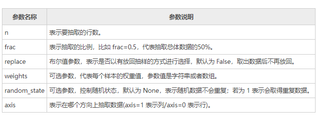
该函数返回与数据集类型相同的新对象，相当于 numpy.random.choice()。实例如下：
import pandas as pd
dict = {'name':["Jack", "Tom", "Helen", "John"],'age': [28, 39, 34, 36],'score':[98,92,91,89]}
info = pd.DataFrame(dict)
#默认随机选择两行
info.sample(n=2)
#随机选择两列
info.sample(n=2,axis=1)
输出结果：
再来看一组示例：
import pandas as pd
info = pd.DataFrame({'data1': [2, 6, 8, 0], 'data2': [2, 5, 0, 8], 'data3': [12, 2, 1, 8]}, index=['John', 'Parker', 'Smith', 'William'])
info
#随机抽取3个数据
info['data1'].sample(n=3)
#总体的50%
info.sample(frac=0.5, replace=True)
#data3序列为权重值，并且允许重复数据出现
info.sample(n=2, weights='data3', random_state=1)
输出结果：
随机选择3行数据：
William 0
Smith 8
Parker 6
Name: data1, dtype: int64
data1 data2 data3
John 2 2 12
William 0 8 8
data1 data2 data3
John 2 2 12
William 0 8 8
二十六、Pandas resample数据重采样¶
数据重采样是将时间序列从一个频率转换至另一个频率的过程，它主要有两种实现方式，分别是降采样和升采样，降采样指将高频率的数据转换为低频率，升采样则与其恰好相反，说明如下：
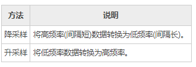
Pandas 提供了 resample() 函数来实现数据的重采样。
1、降采样¶
通过 resample() 函数完成数据的降采样，比如按天计数的频率转换为按月计数。
import pandas as pd
import numpy as np
rng = pd.date_range('1/1/2021',periods=100,freq='D')
ts = pd.Series(np.random.randn(len(rng)),index=rng)
#降采样后并聚合
ts.resample('M').mean()
输出结果：
2021-01-31 0.210353
2021-02-28 -0.058859
2021-03-31 -0.182952
2021-04-30 0.205254
Freq: M, dtype: float64
如果您只想看到月份，那么您可以设置kind=period
输出结果：
2、升采样¶
升采样是将低频率（时间间隔）转换为高频率，示例如下：
import pandas as pd
import numpy as np
#生成一份时间序列数据
rng = pd.date_range('1/1/2021', periods=20, freq='3D')
ts = pd.Series(np.random.randn(len(rng)), index=rng)
print(ts.head())
#使用asfreq()在原数据基础上实现频率转换
ts.resample('D').asfreq().head()
输出结果：
升采样前：
2021-01-01 0.608716
2021-01-04 1.097451
2021-01-07 -1.280173
2021-01-10 -0.175065
2021-01-13 1.046831
Freq: 3D, dtype: float64
升采样后：
2021-01-01 0.608716
2021-01-02 NaN
2021-01-03 NaN
2021-01-04 1.097451
2021-01-05 NaN
Freq: D, dtype: float64
3、频率转换¶
asfreq() 方法不仅能够实现频率转换，还可以保留原频率对应的数值，同时它也可以单独使用，示例如下：
index = pd.date_range('1/1/2021', periods=6, freq='T')
series = pd.Series([0.0, None, 2.0, 3.0,4.0,5.0], index=index)
df = pd.DataFrame({'s':series})
print(df.asfreq("45s"))
输出结果：
num
2021-01-01 00:00:00 0.0
2021-01-01 00:00:45 NaN
2021-01-01 00:01:30 NaN
2021-01-01 00:02:15 NaN
2021-01-01 00:03:00 3.0
2021-01-01 00:03:45 NaN
2021-01-01 00:04:30 NaN
4、插值处理¶
从上述示例不难看出，升采样的结果会产生缺失值，那么就需要对缺失值进行处理，一般有以下几种处理方式：
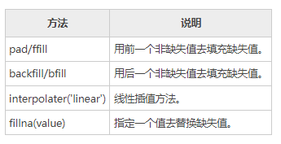
下面使用插值方法处理 NaN 值，示例如下：
import pandas as pd
import numpy as np
#创建时间序列数据
rng = pd.date_range('1/1/2021', periods=20, freq='3D')
ts = pd.Series(np.random.randn(len(rng)), index=rng)
print(ts.resample('D').asfreq().head())
#使用ffill处理缺失值
ts.resample('D').asfreq().ffill().head()
输出结果：
2021-01-01 0.555580
2021-01-02 NaN
2021-01-03 NaN
2021-01-04 -0.079324
2021-01-05 NaN
Freq: D, dtype: float64
#插值处理，注意对比
2021-01-01 0.555580
2021-01-02 0.555580
2021-01-03 0.555580
2021-01-04 -0.079324
2021-01-05 -0.079324
Freq: D, dtype: float64
二十七、Python Pandas分类对象¶
通常情况下，数据集中会存在许多同一类别的信息，比如相同国家、相同行政编码、相同性别等，当这些相同类别的数据多次出现时，就会给数据处理增添许多麻烦，导致数据集变得臃肿，不能直观、清晰地展示数据。
针对上述问题，Pandas 提供了分类对象（Categorical Object），该对象能够实现有序排列、自动去重的功能，但是它不能执行运算。本节，我们了解一下分类对象的使用。
1、对象创建¶
我们可以通过多种方式创建分类对象，下面介绍以下两种方法：
1) 指定dtype创建
输出结果：
通过上述示例，您可能会注意到，虽然传递给 Series 四个元素值，但是它的类别为 3，这是因为 a 的类别存在重复。
2) pd.Categorical
通过 Category 的构造函数，您可以创建一个类别对象。构造函数，如下所示：
values：以列表的形式传参，表示要分类的值。
ordered：布尔值，默认为 False，若为 Ture，表示对分类的数据进行排序。
dtype：返回一个 category 类型，表示分类对象。
示例如下：
输出结果：
再看一组示例：
输出结果：
上述示例中，第二个参数值表示类别，当列表中不存在某一类别时，会自动将类别值设置为 NA。
通过指定ordered=True来实现有序分类。示例如下：
import pandas as pd
cat=pd.Categorical(['a','b','c','a','b','c','d'], ['c', 'b', 'a'],ordered=True)
print(cat)
#求最小值
print(cat.min())
输出结果：
2、获取统计信息¶
对已经分类的数据使用 describe() 方法，您会得到和数据统计相关的摘要信息。
import pandas as pd
import numpy as np
cat = pd.Categorical(["a", "c", "c", np.nan], categories=["b", "a", "c"])
df = pd.DataFrame({"cat":cat, "s":["a", "c", "c", np.nan]})
print(df.describe())
print(df["cat"].describe())
输出结果：
3、获取类别属性
使用obj.categories 命令可以获取对象的类别信息。示例如下：
import pandas as pd
import numpy as np
s = pd.Categorical(["a", "c", "c", np.nan], categories=["b", "a", "c"])
print (s.categories)
输出结果：
通过 obj.order 可以获取 order 指定的布尔值：
import pandas as pd
import numpy as np
cat = pd.Categorical(["a", "c", "c", np.nan], categories=["b", "a", "c"])
#False表示未指定排序
print (cat.ordered)
输出结果：
3、重命名类别¶
要想对类别实现重命名，可以通过 Series.cat.categories 来实现的，示例如下：
import pandas as pd
s = pd.Series(["a","b","c","a"], dtype="category")
#对类名重命名
s.cat.categories = ["Group %s" % g for g in s.cat.categories]
print(s.cat.categories)
输出结果：
4、追加新类别¶
使用 s.cat.add_categories() 方法，可以追加新类别。
import pandas as pd
s = pd.Series(["a","b","c","a"], dtype="category")
#追加新类别
s = s.cat.add_categories([5])
#查看现有类别
print(s.cat.categories)
输出结果：
5、删除类别¶
使用 remove_categories() 方法，可以删除不需要的类别。示例如下：
import pandas as pd
s = pd.Series(["a","b","c","a"], dtype="category")
#原序列
print(s)
#删除后序列
print(s.cat.remove_categories("a"))
输出结果
0 a
1 b
2 c
3 a
dtype: category
Categories (3, object): [a, b, c]
0 NaN
1 b
2 c
3 NaN
dtype: category
Categories (2, object): [b, c]
6、分类对象比较¶
在下述两种情况下，我们可以对分类对象进行比较：
- 当两个类别对象长度相同时，可以进行比较运算；
- 当两个类别的 ordered 均等于 True，并且类别相同时，可以进行比较运算，比如 ==，！=，>，>=，< 和 <=。
示例如下：
import pandas as pd
s1=['a','a','b','d','c']
#当满足两个类别长度相同时
ss0=pd.Categorical(s1,categories=['a','d','b','c'])
ss1 = pd.Categorical(s1)
print(ss0==ss1)
输出结果：
示例如下： import pandas as pd
s1=['a','a','b','d','c']
s2=['a','b','b','d','c']
#满足上述第二个条件，类别相同，并且ordered均为True
ss0=pd.Categorical(s1,categories=['a','d','b','c'],ordered=True)
ss1 = pd.Categorical(s2,categories=['a','d','b','c'],ordered=True)
print(ss0<ss1)
输出结果：
二十八、Python Pandas绘图教程¶
Pandas 在数据分析、数据可视化方面有着较为广泛的应用，Pandas 对 Matplotlib 绘图软件包的基础上单独封装了一个plot()接口，通过调用该接口可以实现常用的绘图操作。本节我们深入讲解一下 Pandas 的绘图操作。
Pandas 之所以能够实现了数据可视化，主要利用了 Matplotlib 库的 plot() 方法，它对 plot() 方法做了简单的封装，因此您可以直接调用该接口。下面看一组简单的示例：
import pandas as pd
import numpy as np
#创建包含时间序列的数据
df = pd.DataFrame(np.random.randn(8,4),index=pd.date_range('2/1/2020',periods=8), columns=list('ABCD'))
df.plot()
输结果图，如下所示：
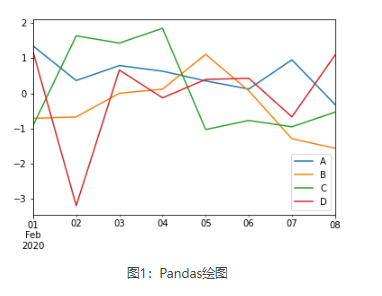
如上图所示，如果行索引中包含日期，Pandas 会自动调用 gct().autofmt_xdate() 来格式化 x 轴。 除了使用默认的线条绘图外，您还可以使用其他绘图方式，如下所示：
- 柱状图：bar() 或 barh()
- 直方图：hist()
- 箱状箱：box()
- 区域图：area()
- 散点图：scatter()
通过关键字参数kind 可以把上述方法传递给 plot()。
1、柱状图¶
创建一个柱状图，如下所示：
import pandas as pd
import numpy as np
df = pd.DataFrame(np.random.rand(10,4),columns=['a','b','c','d','e'])
#或使用df.plot(kind="bar")
df.plot.bar()
输出结果：
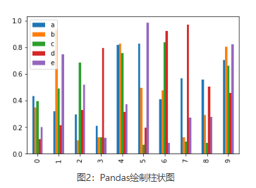
通过设置参数stacked=True 可以生成柱状堆叠图，示例如下：
import pandas as pd
import numpy as np
df = pd.DataFrame(np.random.rand(10,5),columns=['a','b','c','d','e'])
df.plot(kind="bar",stacked=True)
#或者使用df.plot.bar(stacked="True")
输出结果：
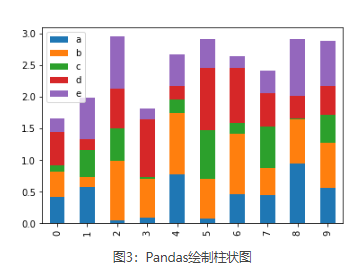
如果要绘制水平柱状图，您可以使用以下方法：
import pandas as pd
import numpy as np
df = pd.DataFrame(np.random.rand(10,4),columns=['a','b','c','d'])
print(df)
df.plot.barh(stacked=True)
输出结果：
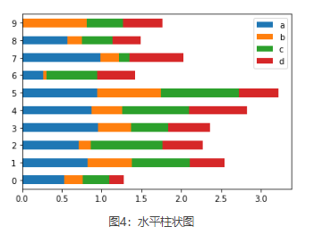
2、直方图¶
plot.hist() 可以实现绘制直方图，并且它还可以指定 bins（构成直方图的箱数）。
import pandas as pd
import numpy as np
df = pd.DataFrame({'A':np.random.randn(100)+2,'B':np.random.randn(100),'C':
np.random.randn(100)-2}, columns=['A', 'B', 'C'])
print(df)
#指定箱数为15
df.plot.hist(bins=15)
输出结果：
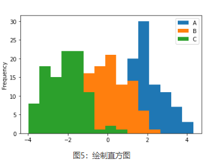
给每一列数据都绘制一个直方图，需要使以下方法：
import pandas as pd
import numpy as np
df = pd.DataFrame({'A':np.random.randn(100)+2,'B':np.random.randn(100),'C':
np.random.randn(100)-2,'D':np.random.randn(100)+3},columns=['A', 'B', 'C','D'])
#使用diff绘制
df.diff().hist(color="r",alpha=0.5,bins=15)
输出结果：
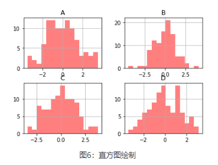
3、箱型图¶
通过调用 Series.box.plot() 、DataFrame.box.plot() 或者 DataFrame.boxplot() 方法来绘制箱型图，它将每一列数据的分布情况，以可视化的图像展现出来。
import pandas as pd
import numpy as np
df = pd.DataFrame(np.random.rand(10, 4), columns=['A', 'B', 'C', 'D'])
df.plot.box()
输出结果：
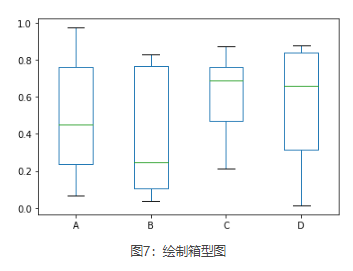
4、区域图¶
您可以使用 Series.plot.area() 或 DataFrame.plot.area() 方法来绘制区域图。
import pandas as pd
import numpy as np
df = pd.DataFrame(np.random.rand(5, 4), columns=['a', 'b', 'c', 'd'])
df.plot.area()
输出结果：
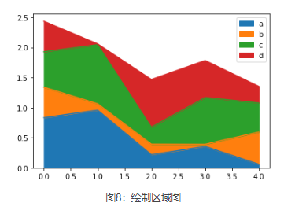
5、散点图¶
使用 DataFrame.plot.scatter() 方法来绘制散点图，如下所示：
import pandas as pd
import numpy as np
df = pd.DataFrame(np.random.rand(30, 4), columns=['a', 'b', 'c', 'd'])
df.plot.scatter(x='a',y='b')
输出结果：
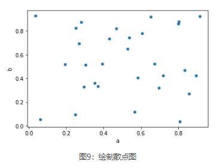
6、饼状图¶
饼状图可以通过 DataFrame.plot.pie() 方法来绘制。示例如下：
import pandas as pd
import numpy as np
df = pd.DataFrame(3 * np.random.rand(4), index=['go', 'java', 'c++', 'c'], columns=['L'])
df.plot.pie(subplots=True)
输出结果：
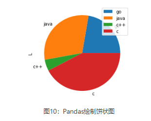
二十九、Python Pandas读取文件¶
当使用 Pandas 做数据分析的时，需要读取事先准备好的数据集，这是做数据分析的第一步。Panda 提供了多种读取数据的方法：
- read_csv() 用于读取文本文件
- read_json() 用于读取 json 文件
- read_sql_query() 读取 sql 语句的，
本节将对上述方法做详细介绍。
1、CSV文件读取¶
CSV 又称逗号分隔值文件，是一种简单的文件格式，以特定的结构来排列表格数据。 CSV 文件能够以纯文本形式存储表格数据，比如电子表格、数据库文件，并具有数据交换的通用格式。CSV 文件会在 Excel 文件中被打开，其行和列都定义了标准的数据格式。 将 CSV 中的数据转换为 DataFrame 对象是非常便捷的。和一般文件读写不一样，它不需要你做打开文件、读取文件、关闭文件等操作。相反，您只需要一行代码就可以完成上述所有步骤，并将数据存储在 DataFrame 中。
下面进行实例演示，首先您需要创建一组数据，并将其保存为 CSV 格式，数据如下：
Name,Hire Date,Salary,Leaves Remaining
John Idle,08/15/14,50000.00,10
Smith Gilliam,04/07/15,65000.00,6
Parker Chapman,02/21/14,45000.00,7
Jones Palin,10/14/13,70000.00,3
Terry Gilliam,07/22/14,48000.00,9
Michael Palin,06/28/13,66000.00,8
注意：将上述数据保存到.txt的文本文件中，然后将文件的扩展名后缀修改为 csv，即可完成 csv 文件的创建。
接下来，我们使用下列代码读写数据：
import pandas
#仅仅一行代码就完成了数据读取，但是注意文件路径不要写错
df = pandas.read_csv('C:/Users/Administrator/Desktop/hrd.csv')
print(df)
输出结果：
Name Hire Date Salary Leaves Remaining
0 John Idle 08/15/14 50000.0 10
1 Smith Gilliam 04/07/15 65000.0 6
2 Parker Chapman 02/21/14 45000.0 7
3 Jones Palin 10/14/13 70000.0 3
4 Terry Gilliam 07/22/14 48000.0 9
5 Michael Palin 06/28/13 66000.0 8
在下一节会对 read_csv() 函数做详细讲解。
2、json读取文件¶
您可以通过下列方法来读取一个 json 文件，如下所示：
输出结果：
Name Hire Date Salary Leaves Remaining
0 John Idle 08/15/14 50000.0 10
1 Smith Gilliam 04/07/15 65000.0 6
2 Parker Chapman 02/21/14 45000.0 7
3 Jones Palin 10/14/13 70000.0 3
4 Terry Gilliam 07/22/14 48000.0 9
5 Michael Palin 06/28/13 66000.0 8
3、SQL数据库读取¶
如果想要从 SQL 数据库读取数据，首先您应该使用 Python 和数据库建立连接，然后将查询语句传递给 read_sql_query() 方法，下面做简单地演示：
1) 安装pysqlite3模块
2) 建立数据连接
3) 数据库读取数据
在 SQLite 数据库中创建一张信息表，您可以随意添加一些信息，最后使用下列方法读取数据即可：
三十、Pandas csv读写文件¶
在《Python Pandas读取文件》中，我们讲解了多种用 Pandas 读写文件的方法。本节我们讲解如何应用这些方法 。
我们知道，文件的读写操作属于计算机的 IO 操作，Pandas IO 操作提供了一些读取器函数，比如 pd.read_csv()、pd.read_json 等，它们都返回一个 Pandas 对象。
在 Pandas 中用于读取文本的函数有两个，分别是： read_csv() 和 read_table() ，它们能够自动地将表格数据转换为 DataFrame 对象。其中 read_csv 的语法格式，如下：
pandas.read_csv(filepath_or_buffer, sep=',', delimiter=None, header='infer',names=None, index_col=None, usecols=None)
下面，新建一个 txt 文件，并添加以下数据：
ID,Name,Age,City,Salary
1,Jack,28,Beijing,22000
2,Lida,32,Shanghai,19000
3,John,43,Shenzhen,12000
4,Helen,38,Hengshui,3500
将 txt 文件另存为 person.csv 文件格式，直接修改文件扩展名即可。接下来，对此文件进行操作。
1、read_csv()¶
read_csv() 表示从 CSV 文件中读取数据，并创建 DataFrame 对象。
import pandas as pd
#需要注意文件的路径
df=pd.read_csv("C:/Users/Administrator/Desktop/person.csv")
print (df)
输出结果：
ID Name Age City Salary
0 1 Jack 28 Beijing 22000
1 2 Lida 32 Shanghai 19000
2 3 John 43 Shenzhen 12000
3 4 Helen 38 Hengshui 3500
1) 自定义索引
在 CSV 文件中指定了一个列，然后使用index_col
import pandas as pd
df=pd.read_csv("C:/Users/Administrator/Desktop/person.csv",index_col=['ID'])
print(df)
输出结果：
Name Age City Salary
ID
1 Jack 28 Beijing 22000
2 Lida 32 Shanghai 19000
3 John 43 Shenzhen 12000
4 Helen 38 Hengshui 3500
2) 查看每一列的dtype
import pandas as pd
#转换salary为float类型
df=pd.read_csv("C:/Users/Administrator/Desktop/person.csv",dtype={'Salary':np.float64})
print(df.dtypes)
输出结果：
注意：默认情况下，Salary 列的 dtype 是 int 类型，但结果显示其为 float 类型，因为我们已经在上述代码中做了类型转换。
3) 更改文件标头名
使用 names 参数可以指定头文件的名称。
import pandas as pd
df=pd.read_csv("C:/Users/Administrator/Desktop/person.csv",names=['a','b','c','d','e'])
print(df)
输出结果：
a b c d e
0 ID Name Age City Salary
1 1 Jack 28 Beijing 22000
2 2 Lida 32 Shanghai 19000
3 3 John 43 Shenzhen 12000
4 4 Helen 38 Hengshui 3500
注意：文件标头名是附加的自定义名称，但是您会发现，原来的标头名（列标签名）并没有被删除，此时您可以使用header 参数来删除它。
通过传递标头所在行号实现删除，如下所示：
import pandas as pd
df=pd.read_csv("C:/Users/Administrator/Desktop/person.csv",names=['a','b','c','d','e'],header=0)
print(df)
输出结果：
a b c d e
0 1 Jack 28 Beijing 22000
1 2 Lida 32 Shanghai 19000
2 3 John 43 Shenzhen 12000
3 4 Helen 38 Hengshui 3500
假如原标头名并没有定义在第一行，您也可以传递相应的行号来删除它。
4) 跳过指定的行数
skiprows参数表示跳过指定的行数。
import pandas as pd
df=pd.read_csv("C:/Users/Administrator/Desktop/person.csv",skiprows=2)
print(df)
输出结果：
注意：包含标头所在行。
2、to_csv()¶
Pandas 提供的 to_csv() 函数用于将 DataFrame 转换为 CSV 数据。如果想要把 CSV 数据写入文件，只需向函数传递一个文件对象即可。否则，CSV 数据将以字符串格式返回。 下面看一组简单的示例：
import pandas as pd
data = {'Name': ['Smith', 'Parker'], 'ID': [101, 102], 'Language': ['Python', 'JavaScript']}
info = pd.DataFrame(data)
print('DataFrame Values:\n', info)
#转换为csv数据
csv_data = info.to_csv()
print('\nCSV String Values:\n', csv_data)
输出结果：
DataFrame:
Name ID Language
0 Smith 101 Python
1 Parker 102 JavaScript
csv数据:
,Name,ID,Language
0,Smith,101,Python
1,Parker,102,JavaScript
指定 CSV 文件输出时的分隔符，并将其保存在 pandas.csv 文件中，代码如下：
import pandas as pd
#注意：pd.NaT表示null缺失数据
data = {'Name': ['Smith', 'Parker'], 'ID': [101, pd.NaT], 'Language': ['Python', 'JavaScript']}
info = pd.DataFrame(data)
csv_data = info.to_csv("C:/Users/Administrator/Desktop/pandas.csv",sep='|')
三十一、Pandas Excel读写操作详解¶
Excel 是由微软公司开发的办公软件之一，它在日常工作中得到了广泛的应用。在数据量较少的情况下，Excel 对于数据的处理、分析、可视化有其独特的优势，因此可以显著提升您的工作效率。但是，当数据量非常大时，Excel 的劣势就暴露出来了，比如，操作重复、数据分析难等问题。Pandas 提供了操作 Excel 文件的函数，可以很方便地处理 Excel 表格。
1、to_excel()¶
通过 to_excel() 函数可以将 Dataframe 中的数据写入到 Excel 文件。
如果想要把单个对象写入 Excel 文件，那么必须指定目标文件名；如果想要写入到多张工作表中，则需要创建一个带有目标文件名的ExcelWriter对象，并通过sheet_name参数依次指定工作表的名称。
to_ecxel() 语法格式如下：
DataFrame.to_excel(excel_writer, sheet_name='Sheet1', na_rep='', float_format=None, columns=None, header=True, index=True, index_label=None, startrow=0, startcol=0, engine=None, merge_cells=True, encoding=None, inf_rep='inf', verbose=True, freeze_panes=None)
下表列出函数的常用参数项，如下表所示：
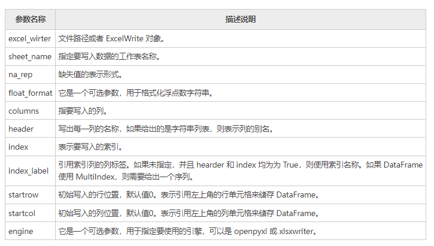
下面看一组简单的示例：
import pandas as pd
#创建DataFrame数据
info_website = pd.DataFrame({'name': ['编程帮', 'c语言中文网', '微学苑', '92python'],
'rank': [1, 2, 3, 4],
'language': ['PHP', 'C', 'PHP','Python' ],
'url': ['www.bianchneg.com', 'c.bianchneg.net', 'www.weixueyuan.com','www.92python.com' ]})
#创建ExcelWrite对象
writer = pd.ExcelWriter('website.xlsx')
info_website.to_excel(writer)
writer.save()
print('输出成功')
上述代码执行后会自动生成 website.xlsx 文件，文件内容如下：
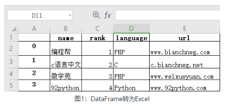
2、read_excel()¶
如果您想读取 Excel 表格中的数据，可以使用 read_excel() 方法，其语法格式如下：
pd.read_excel(io, sheet_name=0, header=0, names=None, index_col=None,
usecols=None, squeeze=False,dtype=None, engine=None,
converters=None, true_values=None, false_values=None,
skiprows=None, nrows=None, na_values=None, parse_dates=False,
date_parser=None, thousands=None, comment=None, skipfooter=0,
convert_float=True, **kwds)
下表对常用参数做了说明：
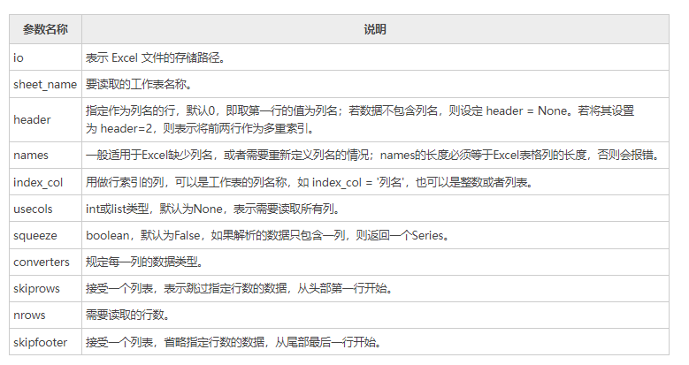
示例如下所示：
import pandas as pd
#读取excel数据
df = pd.read_excel('website.xlsx',index_col='name',skiprows=[2])
#处理未命名列
df.columns = df.columns.str.replace('Unnamed.*', 'col_label')
print(df)
输出结果：
col_label rank language agelimit
name
编程帮 0 1 PHP www.bianchneg.com
微学苑 2 3 PHP www.weixueyuan.com
92python 3 4 Python www.92python.com
再看一组示例：
import pandas as pd
#读取excel数据
#index_col选择前两列作为索引列
#选择前三列数据，name列作为行索引
df = pd.read_excel('website.xlsx',index_col='name',index_col=[0,1],usecols=[1,2,3])
#处理未命名列，固定用法
df.columns = df.columns.str.replace('Unnamed.*', 'col_label')
print(df)
输出结果：
三十二、Pandas index操作索引¶
索引（index）是 Pandas 的重要工具，通过索引可以从 DataFame 中选择特定的行数和列数，这种选择数据的方式称为“子集选择”。 在 Pandas 中，索引值也被称为标签（label），它在 Jupyter 笔记本中以粗体字进行显示。索引可以加快数据访问的速度，它就好比数据的书签，通过它可以实现数据的快速查找。
1、创建索引¶
通过示例对 index 索引做进一步讲解。下面创建一个带有 index 索引的数据，并使用 read_csv() 这些读取数据：
输出结果：
ID Name Age City Salary
0 1 Jack 28 Beijing 22000
1 2 Lida 32 Shanghai 19000
2 3 John 43 Shenzhen 12000
3 4 Helen 38 Hengshui 3500
通过列索引（标签）读取多列数据。
import pandas as pd
#设置"Name"为行索引
data = pd.read_csv("person.csv", index_col ="Name")
# 通过列标签选取多列数据
a = data[["City","Salary"]]
print(a)
输出结果：
再看一组简单的示例：
import pandas as pd
info =pd.read_csv("person.csv", index_col ="Name")
#获取单列数据，或者以列表的形式传入["Salary"]
a =info["Salary"]
print(a)
输出结果：
2、设置索引¶
set_index() 将已存在的列标签设置为 DataFrame 行索引。除了可以添加索引外，也可以替换已经存在的索引。比如您也可以把 Series 或者一个 DataFrme 设置成另一个 DataFrame 的索引。示例如下：
info = pd.DataFrame({'Name': ['Parker', 'Terry', 'Smith', 'William'], 'Year': [2011, 2009, 2014, 2010],
'Leaves': [10, 15, 9, 4]})
#设置Name为行索引
print(info.set_index('Name'))
输出结果：
3、重置索引¶
您可以使用 reset_index() 来恢复初始行索引，示例如下：
import pandas as pd
import numpy as np
info = pd.DataFrame([('William', 'C'),
('Smith', 'Java'),
('Parker', 'Python'),
('Phill', np.nan)],
index=[1, 2, 3, 4],
columns=('name', 'Language'))
print(info)
print(info.reset_index())
输出结果：
重置前：
name Language
1 William C
2 Smith Java
3 Parker Python
4 Phill NaN
重置后：
index name Language
0 1 William C
1 2 Smith Java
2 3 Parker Python
3 4 Phill NaN
三十三、Pandas分层索引入门教程¶
分层索引（Multiple Index）是 Pandas 中非常重要的索引类型，它指的是在一个轴上拥有多个（即两个以上）索引层数，这使得我们可以用低维度的结构来处理更高维的数据。比如，当想要处理三维及以上的高维数据时，就需要用到分层索引。
分层索引的目的是用低维度的结构（Series 或者 DataFrame）更好地处理高维数据。通过分层索引，我们可以像处理二维数据一样，处理三维及以上的数据。分层索引的存在使得分析高维数据变得简单，让抽象的高维数据变得容易理解，同时它比废弃的 Panel 结构更容易使用。
Pandas 可以通过 MultiIndex() 方法来创建分层索引对象，该对象本质上是一个元组序列，序列中每一个元组都是唯一的。下面介绍几种创建分层索引的方式。
1、创建分层索引¶
1) 直接创建
通过 MultiIndex() 的levels 参数能够直接创建分层索引，示例如下：
import pandas as pd
import numpy as np
#为leves传递一个1行5列的二维数组
df=pd.MultiIndex(levels=[[np.nan, 2, pd.NaT, None, 5]], codes=[[4, -1, 1, 2, 3, 4]])
print(df.levels)
print(df)
输出结果：
上述代码中，levels``codes参数用来创建层级索引，这里只有一层，该层的索引值分别是 np.nan, 2, NaT, None, 5；codes表示按参数值对层级索引值排序（与 levels 中的值相对应），也就说 codes 中数值是 leves 序列的下标索引。需要注意，这里的 -1 代表 NaN。
2) 从元组创建
通过 from_tuples() 实现从元组创建分层索引。
#创建元组序列
arrays = [['it', 'it', 'of', 'of', 'for', 'for', 'then', 'then'],
['one', 'two', 'one', 'two', 'one', 'two', 'one', 'two']]
#使用zip()函数创建元组
tuples = list(zip(*arrays))
print(tuples)
输出结果如下：
[('it', 'one'),
('it', 'two'),
('of', 'one'),
('of', 'two'),
('for', 'one'),
('for', 'two'),
('then', 'one'),
('then', 'two')]
然后使用 tuples 创建分层索引，如下所示：
import pandas as pd
#创建了两层索引，并使用names对它们命名
index = pd.MultiIndex.from_tuples(tuples, names=['first', 'second'])
print(index)
输出结果：
MultiIndex([( 'it', 'one'),
( 'it', 'two'),
( 'of', 'one'),
( 'of', 'two'),
( 'for', 'one'),
( 'for', 'two'),
('then', 'one'),
('then', 'two')],
names=['first', 'second'])
3) 从DataFrame对象创建
通过 from_frame() 创建分层索引，示例如下：
#首先创建一个 DataFrame。
import pandas as pd
df = pd.DataFrame([['bar', 'one'], ['bar', 'two'],
['foo', 'one'], ['foo', 'two']],
columns=['first', 'second'])
#然后使用 from_frame()创建分层索引。
index = pd.MultiIndex.from_frame(df)
#将index应用于Series
s=pd.Series(np.random.randn(4), index=index)
print(s)
输出结果：
4) 笛卡尔积创建
笛卡尔积（又称直积）是数学运算的一种方式，下面使用 from_product() 笛卡尔积创建分层索引。
import pandas as pd
#构建数据
numbers = [0, 1, 2]
language = ['Python', 'Java']
#经过笛卡尔积处理后会得到6中组合方式
index = pd.MultiIndex.from_product([numbers, language],names=['number', 'language'])
#将分层索引对象应用于Series
dk_er=pd.Series(np.random.randn(6), index=index)
print(dk_er)
输出结果：
number language
0 Python -0.319739
Java 1.599170
1 Python -0.010520
Java 0.262068
2 Python -0.124177
Java 0.315120
dtype: float64
5) 数组创建分层索引
通过 from_array() 方法，同样可以创建分层索引。示例如下：
输出结果：
2、应用分层索引¶
下面示例讲解了如何在 DataFrame 中应用分层索引。
import pandas as pd
import numpy as np
#创建一个数组
arrays = [[0, 0, 1, 1], ['A', 'B', 'A', 'B']]
#从数组创建
index=pd.MultiIndex.from_arrays(arrays, names=('number', 'letter'))
print(index)
输出结果
上述示例中，第一层为 number，该层有 0、1 两个元素，第二层为 letter，有两个字母 A 和 B。 下面把已经创建的分层索引应用到 DataFrame 中，如下所示：
import pandas as pd
import numpy as np
#创建一个数组
arrays = [[0, 0, 1, 1], ['A', 'B', 'A', 'B']]
index=pd.MultiIndex.from_arrays(arrays, names=('number', 'letter'))
#在行索引位置应用分层索引
df=pd.DataFrame([{'a':11, 'b':22}], index=index)
print(df)
输出结果：
通过 set_index() 可以将 DataFrame 的已有列的标索设置为 index 行索引，示例如下：
import pandas as pd
df= pd.DataFrame({'a': range(5), 'b': range(5, 0, -1),
'c': ['one', 'one', 'one', 'two', 'two'],
'd': [0, 1, 2, 0, 1]})
print(df)
df1=df.set_index(['a','d'],drop=False)
print(df1)
df1=df.set_index(['a','d'],drop=False,append=Ture)
print(df2)
输出结果：
转换前：
a b c d
0 0 5 one 0
1 1 4 one 1
2 2 3 one 2
3 3 2 two 0
4 4 1 two 1
转换后：
a b c d
a d
0 0 0 5 one 0
1 1 1 4 one 1
2 2 2 3 one 2
3 0 3 2 two 0
4 1 4 1 two 1
带append参数：
a b c d
a d
0 0 0 0 5 one 0
1 1 1 1 4 one 1
2 2 2 2 3 one 2
3 3 0 3 2 two 0
4 4 1 4 1 two 1
通过 set_index() 将列索引转换为了分层行索引，其中 drop=False 表示更新索引的同时，不删除 a、d 列；同时，该函数还提供了一个 append = Ture 参数表示不添加默认的整数索引值（0到4）
3、分层索引切片取值¶
下面讲解分层索引切片取值操作，示例如下：
1) 分层行索引操作
import pandas as pd
#构建多层索引
tuple = [('湖人',2008),('步行者',2008),
('湖人',2007),('凯尔特人',2007),
('篮网',2007),('热火',2008)]
salary = [10000,20000,11000,30000,19000,22000]
#其次应用于DataFrame
index = pd.MultiIndex.from_tuples(tuple)
s = pd.Series(salary, index=index)
print(s)
#切片取值
print(s['湖人',2007])
print(s['湖人'])
print(s[:,2008])
#比较value
print(s[s<=20000])
输出结果：
湖人 2008 10000
步行者 2008 20000
湖人 2007 11000
凯尔特人 2007 30000
篮网 2007 19000
热火 2008 22000
dtype: int64
湖人队2007年工资：
11000
湖人队的工资：
2008 10000
2007 11000
dtype: int64
2008年所有队伍工资：
湖人 10000
步行者 20000
热火 22000
dtype: int64
小于等于20000的年份和队伍：
湖人 2008 10000
步行者 2008 20000
湖人 2007 11000
篮网 2007 19000
dtype: int64
2) 行、列多层索引操作
下面看一种更加复杂的情况，就是行、列同时存在多层索引时候，应该如何通过切片取值。示例如下：
df = pd.DataFrame(np.arange(1,13).reshape((4, 3)),
index=[['a', 'a', 'b', 'b'], [1, 2, 1, 2]],
columns=[['Jack', 'Jack', 'Helen'],
['Python', 'Java', 'Python']])
#选择同一层级的索引,切记不要写成['Jack','Helen']
print(df[['Jack','Helen']])
#在不同层级分别选择索引
print(df['Jack','Python'])
#iloc整数索引
print(df.iloc[:3,:2])
#loc列标签索引
print(df.loc[:,('Helen','Python')])
输出结果：
Jack Helen
Python Java Python
a 1 1 2 3
2 4 5 6
b 1 7 8 9
2 10 11 12
a 1 1
2 4
b 1 7
2 10
Name: (Jack, Python), dtype: int32
Jack
Python Java
a 1 1 2
2 4 5
b 1 7 8
a 1 3
2 6
b 1 9
2 12
Name: (Helen, Python), dtype: int32
4、聚合函数应用¶
通过给level 传递参数值，您可以指定在哪个层上进行聚合操作，比如求和、求均值等。示例如下：
import pandas as pd
df = pd.DataFrame(np.arange(1,13).reshape((4, 3)),
index=[['a', 'a', 'b', 'b'], [1, 2, 1, 2]],
columns=[['Jack', 'Jack', 'Helen'],
['Python', 'Java', 'Python']])
#第一步，给行列层级起名字
df.index.names=['key1','key2']
df.columns.names=['name','course']
print(df.sum(level='key2'))
print(df.mean(level="course",axis=1))
输出结果：
#对key2层1/2对应的元素值求和
name Jack Helen
course Python Java Python
key2
1 8 10 12
2 14 16 18
#axis=1沿着水平方向求均值
course Python Java
key1 key2
a 1 2 2
2 5 5
b 1 8 8
2 11 11
在数据分析的过程中，我们把大部分时间都花费在数据的准备和预处理上，Pandas 作为一个灵活、高效的数据预处理工具，提供了诸多数据处理的方法，分层索引（Multiple Index）就是其中之一，分层索引（或多层索引）是 Pandas 的基本特性，它能够增强 Pands 数据预处理的能力。
对于 Series 结构来说，通过给index 参数传递一个二维数组就可以创建一个具有两层索引的 MultiIndex 对象，示例如下：
import pandas as pd
info = pd.Series([11, 14, 17, 24, 19, 32, 34, 27],
index = [['x', 'x', 'x', 'x', 'y', 'y', 'y', 'y'],
['obj1', 'obj2', 'obj3', 'obj4', 'obj1', 'obj2', 'obj3', 'obj4']])
print(info)
输出结果：
上述示例，创建了两个层级的索引，即 (x, y) 和 (obj1，…， obj4)，您可以使用 'index' 命令查看索引。
info.index
输出结果：
MultiIndex([('x', 'obj1'),
('x', 'obj2'),
('x', 'obj3'),
('x', 'obj4'),
('y', 'obj1'),
('y', 'obj2'),
('y', 'obj3'),
('y', 'obj4')],
)
此外，您还可以基于内部索引层（也就是'obj'）来选择数据。如下所示：
输出结果：
5、局部索引¶
局部索引可以理解为：从分层索引中选择特定索引层的一种方法。比如在下列数据中，选择所有'y' 索引指定的数据，示例如下：
import pandas as pd
info = pd.Series([11, 14, 17, 24, 19, 32, 34, 27],
index = [['x', 'x', 'x', 'x', 'y', 'y', 'y', 'y'],
['obj1', 'obj2', 'obj3', 'obj4', 'obj1', 'obj2', 'obj3', 'obj4']])
info['y']
输出结果：
当然您也可以基于内层索引选择数据。
6、行索引层转换为列索引¶
unstack() 用来将行索引转变成列索引，相当于转置操作。通过 unstack() 可以将 Series（一维序列）转变为 DataFrame（二维序列）。示例如下：
import pandas as pd
info = pd.Series([11, 14, 17, 24, 19, 32, 34, 27],
index = [['x', 'x', 'x', 'x', 'y', 'y', 'y', 'y'],
['obj1', 'obj2', 'obj3', 'obj4', 'obj1', 'obj2', 'obj3', 'obj4']])
#行索引标签默认是最外层的 x, y
#0代表第一层索引，而1代表第二层
print(info.unstack(0))
输出结果：
从示例可以看出，unstack(0) 表示选择第一层索引作为列，unstack(1) 表示选择第二层，如下所示：
import pandas as pd
info = pd.Series([11, 14, 17, 24, 19, 32, 34, 27],
index = [['x', 'x', 'x', 'x', 'y', 'y', 'y', 'y'],
['obj1', 'obj2', 'obj3', 'obj4', 'obj1', 'obj2', 'obj3', 'obj4']])
print(info.unstack(1))
输出结果：
7、列索引实现分层¶
我们知道，列索引存在于 DataFrame 结构中，下面创建一个 DataFrame 来演示列索引如何实现分层。
import numpy as np
info = pd.DataFrame(np.arange(12).reshape(4, 3),
index = [['a', 'a', 'b', 'b'], ['one', 'two', 'three', 'four']],
columns = [['num1', 'num2', 'num3'], ['x', 'y', 'x']] )
print(info)
输出结果：
查看所有列索引：
输出结果：
8、交换层和层排序¶
1) 交换层
通过 swaplevel() 方法轻松地实现索引层交换，示例如下：
import pandas as pd
frame = pd.DataFrame(np.arange(12).reshape((4, 3)),
index=[['a', 'a', 'b', 'b'], [1, 2, 1, 2]],
columns=[['Ohio', 'Ohio', 'Colorado'],
['Green', 'Red', 'Green']])
#设置index的levels名称
frame.index.names = ['key1', 'key2']
#设置columns的levels名称
frame.columns.names = ['state','color']
#交换key1层与key层
frame.swaplevel('key1','key2')
输出结果：
2) 层排序
通过 sort_index() 的level 参数实现对层的排序。下面示例，按“key1”的字母顺序重新排序。
import pandas as pd
frame = pd.DataFrame(np.arange(12).reshape((4, 3)),
index=[['a', 'a', 'b', 'b'], [1, 2, 1, 2]],
columns=[['Ohio', 'Ohio', 'Colorado'],
['Green', 'Red', 'Green']])
#设置index的levels的名称，key1 与 key2分别对应不同的层
frame.index.names = ['key1', 'key2']
#设置columns的levels的名称
frame.columns.names = ['state','color']
print(frame.sort_index(level='key1'))
输出结果：
三十四、Pandas执行SQL操作¶
我们知道，使用 SQL 语句能够完成对 table 的增删改查操作，Pandas 同样也可以实现 SQL 语句的基本功能。本节主要讲解 Pandas 如何执行 SQL 操作。
首先加载一个某连锁咖啡厅地址分布的数据集，通过该数据集对本节内容进行讲解。
import pandas as pd
url = 'C:/Users/Administrator/Desktop/coffee/kafei.xlsx'
coffee_df=pd.read_excel(url)
coffee_df.head()
输出结果如下：
address category id tel
0 北京市东城区南竹竿胡同2号1幢2层30212号银河SOHOC座 娱乐休闲:咖啡厅 1874263549184796345 010-85179080
1 北京市东城区东直门内大街277-31号档口 娱乐休闲:咖啡厅 1461638360847848424 400-669-2002
2 北京市东城区王府井东街8号澳门中心L117商场102室 娱乐休闲:咖啡厅 1308505235389562852 400-010-0100
3 北京市东城区前门大街108号底商 娱乐休闲:咖啡厅 15442844740539053384
4 北京市东城区和平里西街51号雍和宫壹中心A座负一层 娱乐休闲:咖啡厅 2357391864111641256 4000100100
1、SELECT¶
在 SQL 中，SELECT 查询语句使用逗号 把要查询的每个字段分开，当然您也可以使用*来选择所有的字段。如下所示：
对于 Pandas 而言，要完成 SELECT 查询，需要把数据集每一列（columns）的名称传递给 DataFrame 对象。如下所示：
下面代码是 Pandas 执行 SELECT 查询的完整程序：
import pandas as pd
url = 'C:/Users/Administrator/Desktop/coffee/kafei.xlsx'
coffee_df=pd.read_excel(url)
#只查看尾3行
coffee_df[['address', 'category', 'id', 'tel']].tail(3)
输出结果如下：
address category id tel
28912 新疆维吾尔自治区北屯市芳园路69-2-12 娱乐休闲:咖啡厅 7443833746160692626
28913 新疆维吾尔自治区北屯市北屯购物公园7-1-7 娱乐休闲:咖啡厅 15288143245642241877
28914 新疆维吾尔自治区可克达拉市人民西路与育才路交叉口西北50米 娱乐休闲:咖啡厅 17884214706482955
假如您传入的是一个空列表， 那最终结果将输出所有的行索引标签。
2、WHERE¶
SQL 中的条件查询是通过 WHERE 子句完成的。格式如下所示：
然而 DataFrame 可以通过多种方式实现条件筛选，最直观的方法是通过布尔索引：
完整程序如下：
import pandas as pd
url = 'C:/Users/Administrator/Desktop/coffee/kafei.xlsx'
coffee_df=pd.read_excel(url)
coffee_df[coffee_df['tel'] == '400-010-0100'].head(5)
输出结果如下：
address category id tel
2 北京市东城区王府井东街8号澳门中心L117商场102室 娱乐休闲:咖啡厅 1308505235389562852 400-010-0100
5 北京市东城区崇文门外大街3号崇文新世界百货一期南门一层 娱乐休闲:咖啡厅 3294587167648650139 400-010-0100
6 北京市东城区东四北大街265号文化金融大厦1层大堂 娱乐休闲:咖啡厅 3046481700882245722 400-010-0100
7 北京市东城区珠市口东大街2号丰泰中心1层 娱乐休闲:咖啡厅 3218554253235914037 400-010-0100
9 北京市东城区怡生健身居然大厦店休闲区 娱乐休闲:咖啡厅 3141197020974020427 400-010-0100
上面的语句通过布尔运算将 True 或 False 对象传递给 DataFrame 对象，然后返回所有为 True 的行。
3、GroupBy¶
在 SQL 语句中，通过 GroupBy 操作可以获取 table 中一组记录的计数。示例如下：
而 Pandas 可通过以下代码实现：
完整的程序如下所示：
import pandas as pd
url = 'C:/Users/Administrator/Desktop/coffee/kafei.xlsx'
coffee_df=pd.read_excel(url)
print(coffee_df.groupby('id').size())
输出结果：
id
938817537566269 1
1343221331916894 1
2068013370184103 1
2147497429057385 1
4021181356852391 1
..
18443951046631684378 1
18444337559943971606 1
18444494959108924300 1
18445005868173060838 1
18446259420330511125 1
Length: 23240, dtype: int64
4、LIMIT¶
在 SQL 中，LIMIT 语句主要起到限制作用，比如查询前 n 行记录：
而在 Pandas 中，您可以通过 head() 来实现（默认前 5 行），示例如下：
import pandas as pd
url = 'C:/Users/Administrator/Desktop/coffee/kafei.xlsx'
coffee_df=pd.read_excel(url)
coffee_df[['address', 'tel']].head(3)
输出结果：
address tel
0 北京市东城区南竹竿胡同2号1幢2层30212号银河SOHOC座 010-85179080
1 北京市东城区东直门内大街277-31号档口 400-669-2002
2 北京市东城区王府井东街8号澳门中心L117商场102室 400-010-0100
三十五、Pandas和NumPy的比较¶
我们知道 Pandas 是在 NumPy 的基础构建而来，因此，熟悉 NumPy 可以更加有效的帮助我们使用 Pandas。
NumPy 主要用 C语言编写，因此，在计算还和处理一维或多维数组方面，它要比 Python 数组快得多。关于 NumPy 的学习，可以参考《Python NumPy教程》。
1、创建数组¶
数组的主要作用是在一个变量中存储多个值。NumPy 可以轻松地处理多维数组，示例如下:
import numpy as np
arr = np.array([2, 4, 6, 8, 10, 12])
print(type(arr))
print ("打印新建数组: ",end="")
#使用for循环读取数据
for l in range (0,5):
print (arr[l], end=" ")
输出结果：
虽然 Python 本身没有数组这个说法，不过 Python 提供一个 array 模块，用于创建数字、字符类型的数组，它能够容纳字符型、整型、浮点型等基本类型。示例如下：
import array
#注意此处的 'l' 表示有符号int类型
arr = array.array('l', [2, 4, 6, 8, 10, 12])
print(type(arr))
print ("新建数组: ",end="")
for i in range (0,5):
print (arr[i], end=" ")
输出结果：
2、布尔索引¶
布尔索引是 NumPy 的重要特性之一，通常与 Pandas 一起使用。它的主要作用是过滤 DataFrame 中的数据，比如布尔值的掩码操作。 下面示例展示了如何使用布尔索引访问 DataFrame 中的数据。
首先创建一组包含布尔索引的数据，如下所示：
import pandas as pd
dict = {'name':["Smith", "William", "Phill", "Parker"],
'age': ["28", "39", "34", "36"]}
info = pd.DataFrame(dict, index = [True, True, False, True])
print(info)
输出结果：
然后使用.loc 访问索引为 True 的数据。示例如下：
import pandas as pd
dict = {'name':["Smith", "William", "Phill", "Parker"],
'age': ["28", "39", "34", "36"]}
info = pd.DataFrame(dict, index = [True, True, False, True])
#返回所有为 True的数据
print(info.loc[True])
输出结果：
3、重塑数组形状¶
在不改变数组数据的情况下，对数组进行变形操作，即改变数组的维度，比如 23（两行三列）的二维数组变维 32（三行两列）的二维数组。变形操作可以通过 reshape() 函数实现。 示例如下：
import numpy as np
arr = np.arange(16)
print("原数组: \n", arr)
arr = np.arange(16).reshape(2, 8)
print("\n变形后数组:\n", arr)
arr = np.arange(16).reshape(8 ,2)
print("\n变形后数组:\n", arr)
输出结果：
原数组:
[ 0 1 2 3 4 5 6 7 8 9 10 11 12 13 14 15]
变形后数组:
[[ 0 1 2 3 4 5 6 7]
[ 8 9 10 11 12 13 14 15]]
变形后数组:
[[ 0 1]
[ 2 3]
[ 4 5]
[ 6 7]
[ 8 9]
[10 11]
[12 13]
[14 15]]
4、Pdans与NumPy区别¶
Pandas 和 NumPy 被认为是科学计算与机器学习中必不可少的库，因为它们具有直观的语法和高性能的矩阵计算能力。下面对 Pandas 与 NumPy 进行简单的总结，如下表所示：
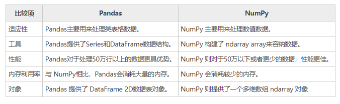
5、转换ndarray数组¶
在某些情况下，需要执行一些 NumPy 数值计算的高级函数，这个时候您可以使用 to_numpy() 函数，将 DataFrame 对象转换为 NumPy ndarray 数组，并将其返回。函数的语法格式如下：
参数说明如下：
- dtype：可选参数，表示数据类型；
- copy：布尔值参数，默认值为 Fales，表示返回值不是其他数组的视图。
下面使用示例，了解该函数的使用方法。示例 1：
info = pd.DataFrame({"P": [2, 3], "Q": [4.0, 5.8]})
#给info添加R列
info['R'] = pd.date_range('2020-12-23', periods=2)
print(info)
#将其转化为numpy数组
n=info.to_numpy()
print(n)
print(type(n))
输出结果：
可以通过 type 查看其类型，输出如下：
示例2：
import pandas as pd
#创建DataFrame对象
info = pd.DataFrame([[17, 62, 35],[25, 36, 54],[42, 20, 15],[48, 62, 76]],
columns=['x', 'y', 'z'])
print('DataFrame\n----------\n', info)
#转换DataFrame为数组array
arr = info.to_numpy()
print('\nNumpy Array\n----------\n', arr)
输出结果：
DataFrame
----------
x y z
0 17 62 35
1 25 36 54
2 42 20 15
3 48 62 76
Numpy Array
----------
[[17 62 35]
[25 36 54]
[42 20 15]
[48 62 76]]
三十六、Pandas使用的注意事项¶
Pandas 基于 NumPy 构建，它遵循 NumPy 设定的一些规则。因此，当您在使用 Pandas 时，需要额外留意一些事项，避免出现一些不必要的错误。
1、if语句使用¶
在 if 语句中，如果您需要将 Pandas 对象转换为布尔值时，需要格外留意，这种操作会引起 ValueError 异常， 下面通过一组示例做简单说明：
输出结果：
ValueError
....
ValueError: The truth value of a Series is ambiguous. Use a.empty, a.bool(), a.item(), a.any() or a.all().
从输出结果可以看出，上述代码引发了 ValueError 错误，并告诉我们 Series 的真值是不明确的。下面对其进行了简单分析： 如果 if 语句判断为 True，可能是认为它的长度并不是 0，反之 if 语句判断为 Fasle，可能是认为 Series 的数据值中包含了 False 值，因此是真还是假，无法判断，所以此处抛出了 ValueError 错误。
上述代码给出的修改建议，如下所示：
import pandas as pd
#使用 any()方法解决
if pd.Series([False, True, False]).any():
print("I am 编程帮 www.biancheng.com")
输出结果：
如果要是计算布尔元素的 Series 对象，那么您可以使用 bool() 方法进行修改，如下所示：
输出结果：
2、布尔运算¶
如果在 Pandas 对象中使用==和！= 这样的布尔运算符时，将返回一个布尔序列，示例如下：
输出结果：
3、isin()操作¶
isin() 也会返回一个布尔序列，它用来判断元素值是否包含在的 Series 序列中。示例如下：
输出结果：
4、reindex()操作¶
reindex() 函数表示重置行索引，该方法会生成新的 Pandas 对象，示例如下：
import pandas as pd
import numpy as np
#index行索引使用字符和数字混合的形式
df = pd.DataFrame(np.random.randn(6, 4), columns=['one', 'two', 'three','four'],index=['a','b',2,3,'e',5])
print (df)
#数字与字符混合后取数据
print (df.reindex(['a','b',5]))
print (df.reindex([2,'e']))
输出结果：
one two three four
a 0.727276 -0.360391 0.381606 1.195126
b -1.974803 0.009088 -1.065647 0.628699
2 0.156798 -1.116029 1.020673 -0.215485
3 -1.310007 0.601206 0.417439 0.049863
e 0.232375 0.235999 -1.886337 -0.421110
5 0.488758 0.108129 -1.405737 2.375517
one two three four
a 0.727276 -0.360391 0.381606 1.195126
b -1.974803 0.009088 -1.065647 0.628699
5 0.488758 0.108129 -1.405737 2.375517
one two three four
2 0.156798 -1.116029 1.020673 -0.215485
e 0.232375 0.235999 -1.886337 -0.421110